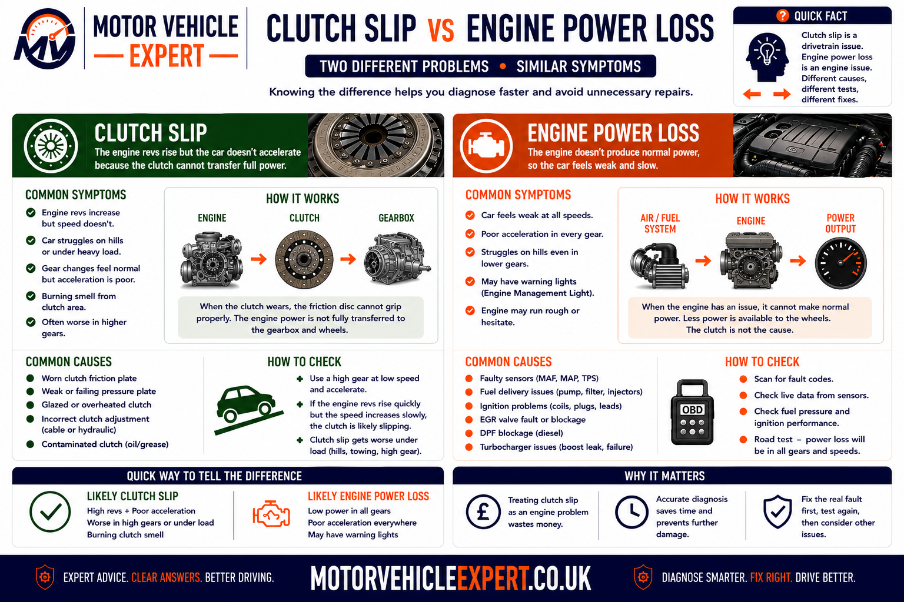
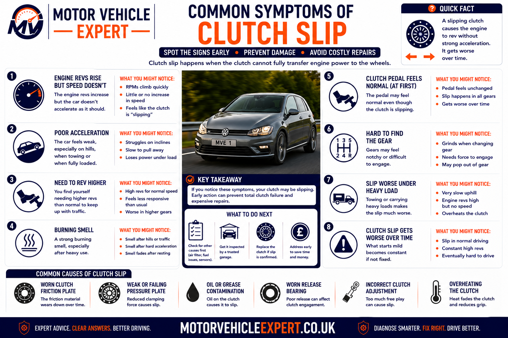
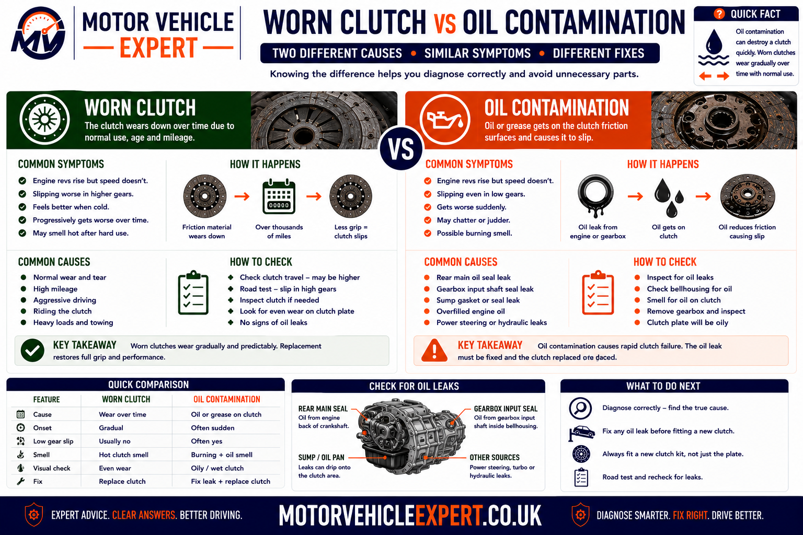
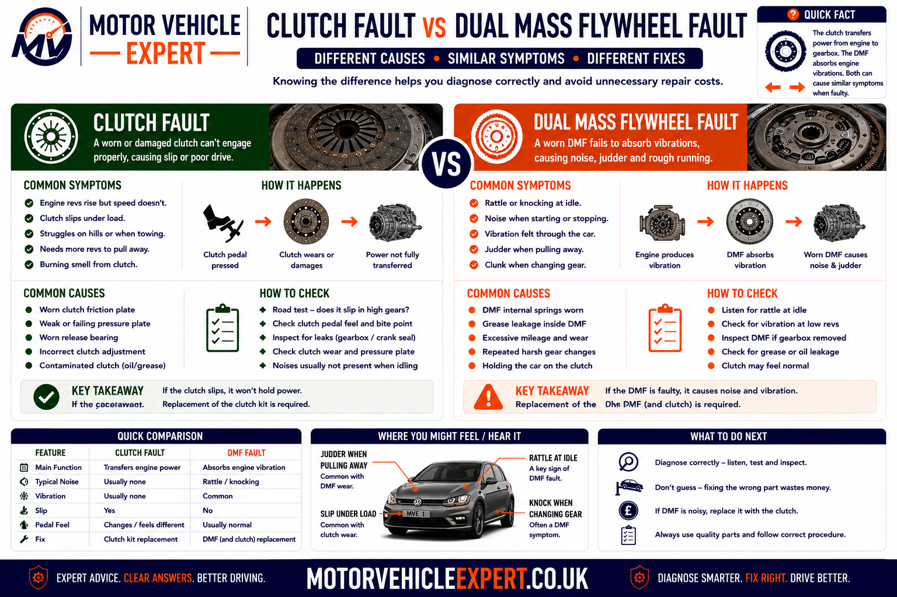
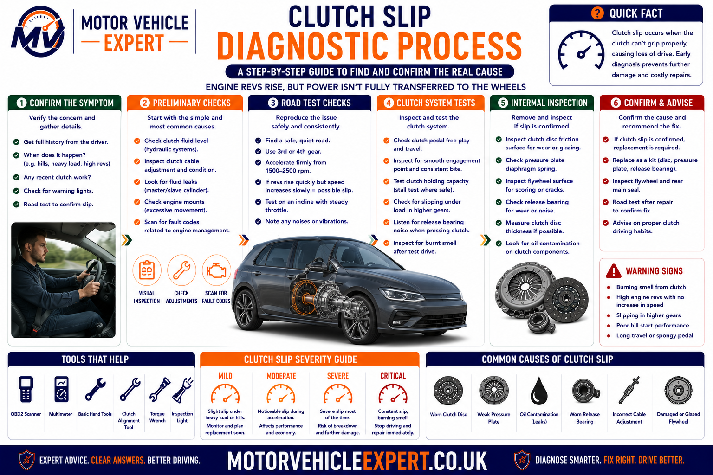
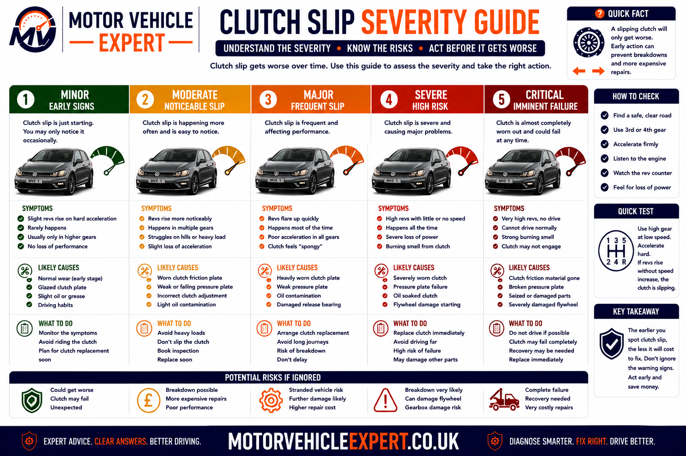
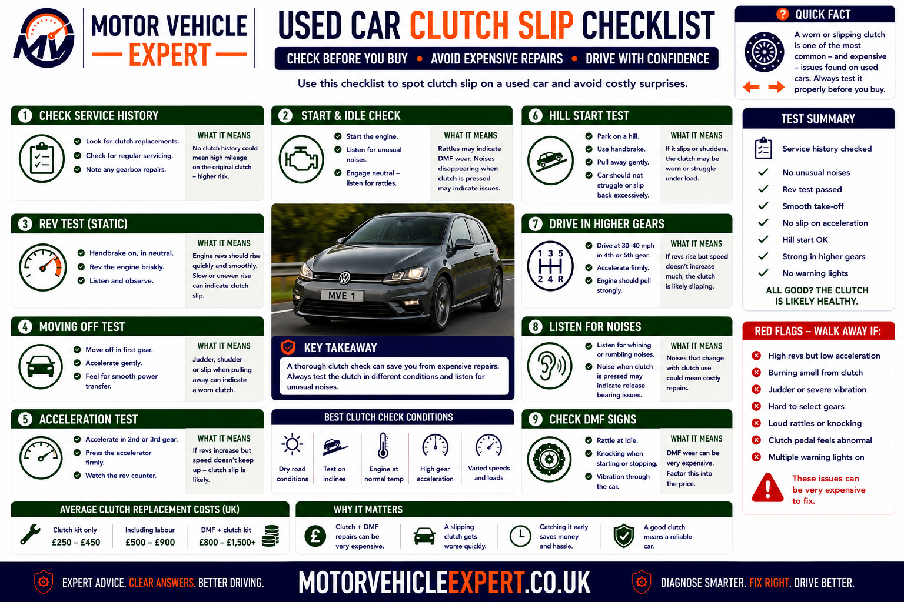
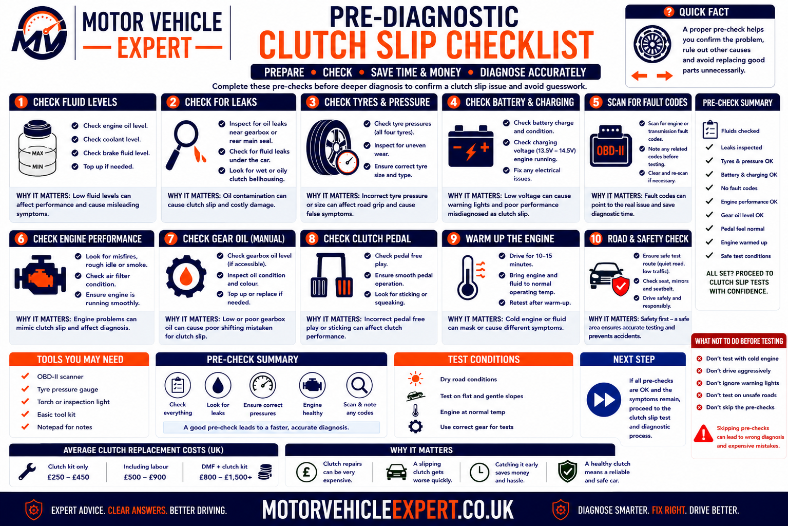

Use the Diagnostic App for Suspected Clutch Slip
Poor acceleration does not always mean the clutch is slipping. Engine, turbocharger, fuelling, transmission and drivetrain faults can produce similar driver complaints. The Motor Vehicle Expert diagnostic app can help classify the symptom before expensive clutch or gearbox work is authorised.
1. Compare Revs and Road Speed
Record whether engine speed rises faster than the vehicle accelerates.
2. Identify the Load Condition
Note whether the fault appears uphill, in higher gears, while towing or after the clutch becomes hot.
3. Check Related Clues
Record bite-point position, pedal return, burning smell, vibration, oil leakage and warning lights.
4. Judge the Driving Risk
Decide whether a careful garage journey or immediate recovery is the safer option.
Genuine clutch slip normally allows engine speed to flare while road speed increases slowly. Engine power loss normally prevents the engine from producing that strong rise in revs under load.
What Are the Main Symptoms of a Slipping Clutch?
The classic clutch-slip symptom is engine speed rising without a matching increase in road speed. The engine may sound as though it is accelerating normally, but the vehicle feels slow because the clutch is not transferring all available torque into the gearbox.
Other common signs include a high clutch bite point, weak acceleration uphill, slip in higher gears, a burning smell after acceleration, reduced towing ability and symptoms that become worse once the clutch is hot.
Revs Rise, Speed Does Not
The rev counter climbs quickly while vehicle acceleration remains weak or delayed.
High Clutch Bite Point
The clutch begins transferring drive near the top of the pedal travel, particularly when combined with other wear symptoms.
Worse Under Heavy Load
Hills, higher gears, towing, passengers and heavy acceleration make the fault more obvious.
Burning Clutch Smell
Repeated slipping overheats the friction material and can create a sharp hot smell.
Typical Evidence
- ✓ Engine revs flare under acceleration.
- ✓ Road speed does not follow the rev increase.
- ✓ The symptom is worse in higher gears.
- ✓ Hill climbing increases the slip.
- ✓ A burning smell appears after loading the clutch.
- ✓ The bite point is high or inconsistent.
Typical Evidence
- ✓ Engine revs struggle to rise under load.
- ✓ Misfire, hesitation or warning lights are present.
- ✓ The fault appears in several gears without rev flare.
- ✓ Turbocharger boost or fuel delivery is weak.
- ✓ Exhaust restriction limits engine performance.
- ✓ No clutch smell or bite-point change is present.
Do not condemn the clutch from poor acceleration alone. Compare engine speed with road speed and establish whether the engine is producing power that the clutch fails to transfer.
A badly worn or overheated clutch may deteriorate rapidly and leave the vehicle unable to climb, accelerate or move away from a junction. Arrange prompt diagnosis before the fault reaches that stage.
Is a Slipping Clutch Serious?
Yes. Clutch slip means some of the engine’s torque is being lost as heat instead of reaching the gearbox and driven wheels. The fault may begin as a brief rev flare under heavy acceleration, but it normally becomes more frequent as the friction surfaces wear, overheat or become contaminated.
A slipping clutch can reduce acceleration when joining traffic, climbing hills or overtaking. Severe slip can leave the vehicle unable to move, while continued overheating may damage the pressure plate, flywheel and surrounding release components.
Brief Slip Under Heavy Load
Early WarningRevs flare briefly during firm acceleration in a higher gear but normal drive returns when the throttle is reduced.
Repeated Slip During Normal Driving
Significant FaultThe clutch slips during ordinary acceleration, moderate hills or routine motorway driving.
Burning Smell and Poor Acceleration
High RiskHeat is building in the clutch assembly and may damage the flywheel, pressure plate and release system.
Severe Flare or Loss of Drive
UrgentThe vehicle cannot accelerate safely, climb a modest gradient or move reliably from a standstill.
Early Clutch-Slip Warnings
- ✓ Revs flare briefly in higher gears.
- ✓ Acceleration feels weaker uphill.
- ✓ The bite point has moved higher.
- ✓ The symptom becomes worse after traffic.
- ✓ A mild hot smell appears after heavy load.
- ✓ Towing or additional weight exposes the fault.
Urgent Clutch-Slip Warnings
- ! Engine speed rises dramatically with little acceleration.
- ! The vehicle cannot climb a normal hill.
- ! A strong burning smell continues after stopping.
- ! Smoke appears from the gearbox area.
- ! Drive becomes intermittent.
- ! The clutch pedal fails to return normally.
- ! The vehicle cannot move safely from a junction.
Each slipping event creates additional heat. That heat can glaze friction material, reduce clamping performance and damage the flywheel surface, making the next slipping event easier to trigger.
What Does Clutch Slip Feel Like While Driving?
Clutch slip often feels as though the engine has become disconnected from the vehicle’s acceleration. The engine responds to the accelerator and the rev counter rises, but the car does not gain speed with the same urgency.
In mild cases, the rev flare may last only a second before the clutch grips again. In severe cases, the engine continues revving while the vehicle struggles to accelerate even on a level road.
Engine Sounds Strong
The engine note rises normally and may sound as though the car is accelerating hard.
Vehicle Speed Responds Slowly
Road speed increases more slowly than expected despite the rise in engine speed.
Revs Drop When Throttle Is Reduced
Lifting the accelerator may allow the clutch to grip again and reconnect engine speed with road speed.
Fault Appears Under Load
The clutch may feel normal during gentle town driving but slip during hills, overtaking or motorway acceleration.
Hot Smell Follows the Event
Repeated friction can produce a sharp smell after the vehicle is parked.
Bite Point May Feel High
Drive may begin only near the top of pedal travel, although this varies between clutch designs.
Acceleration Feels Inconsistent
The clutch may grip correctly during one acceleration attempt and slip during the next as temperature changes.
Hill Starts Become Difficult
More throttle is required and the vehicle may move slowly despite high engine speed.
Heavy Loads Expose the Fault
Passengers, luggage, trailers and steep gradients increase the torque the clutch must transfer.
The engine may be producing normal power. The problem occurs between the engine flywheel and the gearbox input shaft, where the clutch fails to transmit all of that power.
Clutch Slip vs Engine Power Loss
Both faults can make a car feel slow, but they affect engine speed differently. Clutch slip allows the engine to rev without transferring enough torque to the wheels. Engine power loss prevents the engine producing the expected torque in the first place.

Revs that rise freely while road speed lags support clutch slip. An engine that cannot raise its revs strongly under load points more towards an engine-performance problem.
More Likely When
- ✓ Engine revs rise quickly under load.
- ✓ Road speed does not rise at the same rate.
- ✓ Higher gears expose the fault.
- ✓ The problem becomes worse uphill.
- ✓ A clutch smell appears after acceleration.
- ✓ No engine warning light or misfire is present.
More Likely When
- ✓ Engine revs increase slowly under load.
- ✓ Hesitation, stuttering or misfire is present.
- ✓ An engine warning light is illuminated.
- ✓ Turbocharger boost feels absent.
- ✓ Fuel or exhaust restriction symptoms are present.
- ✓ The clutch bite point and smell remain normal.
| Diagnostic clue | Clutch-slip pattern | Engine-power-loss pattern |
|---|---|---|
| Engine revs | Rise quickly or flare | Struggle to rise under load |
| Road speed | Lags behind engine speed | Usually follows the limited engine output |
| Higher gears | Often expose slip clearly | May expose low torque without rev flare |
| Burning smell | May follow repeated slip | Not normally a clutch smell |
| Warning lights | Often absent | May show engine or emissions faults |
| Typical diagnostic direction | Clutch, release system, contamination and flywheel | Air, fuel, ignition, turbocharger and exhaust systems |
Poor acceleration alone is too broad to diagnose. The relationship between engine speed and vehicle speed is the strongest initial separation between clutch slip and lost engine performance.
Common Symptoms of a Slipping Clutch
Clutch slip may begin only under maximum torque demand and then progress until it affects ordinary acceleration. The complete symptom pattern is more useful than any single bite-point or smell observation.

Revs rising without matching acceleration remains the strongest symptom, particularly when the fault becomes worse in higher gears or on gradients.
Engine Rev Flare
Engine speed rises suddenly during acceleration without an equal increase in road speed.
Weak Acceleration
The car feels slow despite the engine sounding busy and responsive.
High Clutch Bite Point
Drive begins near the top of pedal travel, particularly when combined with other clutch-wear symptoms.
Slip in Higher Gears
Fourth, fifth or sixth gear acceleration exposes the reduced torque capacity.
Poor Hill Performance
Engine revs rise but the vehicle climbs slowly or requires reduced throttle to regain grip.
Burning Friction Smell
A sharp hot smell develops after acceleration, reversing, traffic or repeated hill starts.
Worse When Hot
The clutch may hold when cold but begin slipping after traffic or repeated acceleration.
Reduced Towing Ability
The additional trailer load exceeds the remaining clutch torque capacity.
Difficulty Carrying Heavy Loads
Passengers, luggage and steep roads make the weakness more noticeable.
Inconsistent Engagement
The clutch grips during one acceleration attempt and slips during another as heat changes.
Pedal Return Changes
A sticking or slow pedal may indicate a release-system fault preventing full engagement.
Oil Leakage Near the Bellhousing
Engine or gearbox oil may be entering the clutch housing and contaminating the friction surfaces.
Pedal travel and bite-point position vary between vehicles. Confirm rev flare, load-related slip, clutch smell, pedal return and release-system condition before reaching a conclusion.
Why Do the Revs Rise Without the Car Accelerating?
In a healthy manual drivetrain, the clutch locks the engine flywheel to the gearbox input shaft once the pedal is released. Engine speed, selected gear and road speed then maintain a predictable relationship.
When the clutch slips, the flywheel rotates faster than the gearbox input shaft. The engine revs increase, but part of that rotational energy becomes heat at the friction surfaces instead of accelerating the car.
1. Driver Accelerates
The engine produces additional torque and engine speed begins increasing.
2. Clutch Should Transfer Torque
The pressure plate should hold the friction plate firmly against the flywheel.
3. Friction Capacity Is Exceeded
Wear, oil or weak clamping force allows relative movement between the surfaces.
4. Revs Flare and Heat Builds
Engine speed rises without matching gearbox and road-speed increase.
| Observed behaviour | Likely interpretation | Recommended action |
|---|---|---|
| Revs rise and speed follows immediately | Normal torque transfer | Continue monitoring other symptoms |
| Revs flare briefly and then reconnect | Early clutch slip | Arrange prompt diagnosis |
| Revs remain high while acceleration stays weak | Significant clutch slip | Avoid heavy load and organise repair |
| Revs struggle to rise and the engine hesitates | Engine power loss more likely | Diagnose engine performance |
| Revs flare during automatic gear changes | Automatic-transmission slip possible | Identify transmission type and test it correctly |
Once a manual gear is fully engaged and the clutch pedal is released, engine speed should not jump independently of road speed unless the tyres spin or the clutch loses grip.
Does a High Clutch Bite Point Mean the Clutch Is Worn?
It can. As friction material wears, some clutch designs begin engaging closer to the top of pedal travel. However, self-adjusting mechanisms, hydraulic release systems and vehicle-specific pedal geometry mean bite-point position alone is not conclusive.
Gradual Bite-Point Rise
A bite point that has moved progressively higher over time may support normal friction-plate wear.
High Bite Point With Rev Flare
The combination strongly supports clutch slip and reduced friction capacity.
High Bite Point With Burning Smell
Heat and slipping are likely developing during engagement or acceleration.
Sudden Bite-Point Change
A rapid change may indicate hydraulic, cable, release-bearing or adjustment problems.
Low Bite Point
A low bite point may involve air, hydraulic leakage, cable adjustment or incomplete clutch release.
Inconsistent Bite Point
Changing engagement position can suggest hydraulic faults, heat or mechanical release-system problems.
Supporting Evidence
- ✓ The bite point has risen gradually.
- ✓ Revs flare under heavy acceleration.
- ✓ Slip is worse in higher gears.
- ✓ The clutch has covered substantial mileage.
- ✓ No hydraulic leakage or pedal-return fault is present.
Supporting Evidence
- ✓ The pedal sticks or returns slowly.
- ✓ The bite point changed suddenly.
- ✓ Hydraulic fluid is leaking.
- ✓ Engagement changes after repeated pedal use.
- ✓ The clutch was recently replaced or adjusted.
A naturally high bite point that has remained unchanged for years is less concerning than one that has recently moved and is accompanied by rev flare or burning smell.
Why Does a Slipping Clutch Cause Poor Acceleration?
Acceleration depends on engine torque reaching the driven wheels. A slipping clutch interrupts that transfer, so the engine can increase speed without delivering the corresponding force through the gearbox.
Torque Is Converted Into Heat
Friction between partially slipping surfaces produces heat instead of full vehicle acceleration.
Gearbox Input Speed Lags
The engine flywheel turns faster than the clutch plate and gearbox input shaft.
Acceleration Becomes Delayed
Road speed may begin increasing only after the driver reduces throttle and the clutch regains grip.
More Throttle Makes It Worse
Increasing torque demand can overcome the remaining friction capacity and create more slip.
Fuel Use Can Increase
The engine consumes fuel and produces revs without converting all of that effort into road speed.
Overtaking Ability Is Reduced
The vehicle may not respond predictably when rapid acceleration is needed.
Aggressive testing creates unnecessary heat and can turn mild slip into sudden loss of drive. Controlled diagnosis should stop as soon as the relationship between revs and road speed is clear.
Why Is Clutch Slip Worse in Higher Gears?
Higher gears place a large torque demand on the clutch when the driver accelerates from relatively low engine speed. A worn clutch may hold during gentle first- or second-gear driving but lose grip in fourth, fifth or sixth gear.
Greater Torque Demand
The clutch must resist more engine torque during high-gear acceleration.
Low Engine Speed, Open Throttle
Accelerating hard from low revs creates a demanding high-load condition.
Early Slip Is Easier to Expose
A marginal clutch may fail this load condition before slipping during lower-gear acceleration.
Turbocharged Torque Increase
Boost can create a strong mid-range torque rise that exceeds the clutch’s remaining capacity.
Uphill Load Adds Demand
Gradient and higher gearing combine to expose weak clutch grip.
Towing Magnifies the Symptom
Trailer weight substantially increases the torque needed to maintain speed.
A technician does not need prolonged full-throttle acceleration. A brief controlled load that produces a clear rev flare is sufficient to stop the test and continue workshop diagnosis.
Why Does a Slipping Clutch Struggle Uphill?
Climbing a gradient requires more wheel torque than maintaining speed on a level road. The clutch must transfer that additional engine torque without allowing the flywheel and clutch plate to rotate at different speeds.
Revs Flare During the Climb
Engine speed rises but the car does not gain or maintain the expected road speed.
Throttle Must Be Reduced
Lifting the accelerator reduces torque and may allow the clutch to grip again temporarily.
Burning Smell Appears Afterwards
Prolonged relative movement overheats the friction surfaces.
Passengers Make It Worse
Additional vehicle mass increases the torque required to climb.
Higher Gears Expose Slip
Attempting the gradient in too high a gear places more load on the clutch.
Hill Starts Create Extra Heat
Holding the vehicle on the bite point can overheat an already weak clutch.
Typical Pattern
- ✓ Revs rise sharply during the gradient.
- ✓ Road speed increases slowly or begins falling.
- ✓ Reducing throttle helps the clutch reconnect.
- ✓ The symptom is worse in a higher gear.
- ✓ A clutch smell may appear afterwards.
Typical Pattern
- ✓ Engine revs fail to rise strongly.
- ✓ The engine hesitates, stutters or misfires.
- ✓ Boost or fuelling feels restricted.
- ✓ An engine warning light may appear.
- ✓ No clutch smell or rev flare is present.
Each test adds heat and may leave the vehicle unable to complete the climb or move away again. One clear controlled symptom is enough to arrange diagnosis.
Clutch Slip While Towing or Carrying Heavy Loads
Towing and heavy loading demand more torque during pull-away, acceleration and hill climbing. A clutch with reduced friction capacity may appear acceptable when the vehicle is lightly loaded but slip once a trailer, passengers or cargo are added.
Trailer Pull-Away
Moving the combined weight from rest requires prolonged and controlled clutch engagement.
Uphill Towing
Gradient and trailer resistance create a severe torque demand.
Motorway Acceleration
Higher gears and added mass may expose slip when joining or overtaking.
Reversing a Trailer
Slow manoeuvring can require extended clutch modulation and create substantial heat.
Repeated Hill Starts
Holding the combination on the clutch can rapidly overheat the friction surfaces.
Vehicle Overloading
Excess weight increases clutch, brake, tyre and suspension loads beyond normal conditions.
The additional load can turn mild slip into rapid overheating or complete loss of drive. Repair the fault before towing again.
What Does a Burning Clutch Smell Mean?
A burning clutch smell develops when friction material becomes excessively hot. It is often described as sharp, acrid or similar to overheated brakes or electrical insulation.
One smell after a difficult manoeuvre does not automatically prove that the clutch requires replacement. Repeated smell during normal driving, especially with rev flare or a high bite point, is much more concerning.
Repeated Clutch Slip
Relative movement between the friction plate, flywheel and pressure plate creates heat.
Riding the Clutch Pedal
Resting a foot on the pedal may hold the release system partly applied.
Holding on the Bite Point
Using the clutch instead of the brake on a hill generates continuous friction.
Repeated Hill Starts
High torque at low road speed creates significant heat.
Slow Reversing
Extended clutch modulation during parking or trailer manoeuvring can overheat the plate.
Towing or Heavy Loads
Additional torque demand exposes wear and creates more engagement heat.
Weak Pressure Plate
Reduced clamping force permits slip even with the pedal fully released.
Oil-Contaminated Friction Material
Contaminated surfaces may slip and overheat during ordinary driving.
Release System Not Returning
Hydraulic or cable faults may keep slight release pressure applied.
| Smell pattern | Possible interpretation | Recommended response |
|---|---|---|
| One smell after a difficult hill start | Temporary clutch overheating possible | Allow cooling and monitor for repeat symptoms |
| Smell after ordinary acceleration | Clutch slip or release fault likely | Arrange prompt diagnosis |
| Smell with rev flare | Friction surfaces are slipping under load | Avoid heavy acceleration and organise repair |
| Smell with smoke | Severe overheating | Stop and recover the vehicle |
| Smell near one wheel | Brake overheating may be responsible | Inspect the braking system before blaming the clutch |
Overheated brakes, auxiliary belts, electrical faults and oil on hot exhaust components can produce similar smells. The complete symptom pattern should support clutch diagnosis.
Is Clutch Slip Worse When the Clutch Is Hot?
It can be. Heat changes friction performance and can expose a marginal clutch that still grips when cold. Repeated slip creates further heat, producing a cycle of reduced grip and increasing damage.
Possible Causes
- ✓ Worn friction material near its torque limit.
- ✓ Glazed friction surfaces.
- ✓ Pressure-plate clamping changes with heat.
- ✓ Oil contamination becomes more active when warm.
- ✓ Hydraulic components fail to return fully when hot.
- ✓ Flywheel heat damage reduces consistent grip.
Possible Causes
- ✓ Advanced friction-plate wear.
- ✓ Significant oil contamination.
- ✓ Weak or damaged pressure plate.
- ✓ Incorrect clutch installation.
- ✓ Release system remains partly applied.
- ✓ Incorrect clutch components have been fitted.
Traffic Heat
Repeated pull-away and clutch modulation can expose marginal grip.
Hill-Start Heat
High torque and prolonged engagement rapidly raise surface temperature.
Motorway Load
A hot clutch may slip when accelerating in a high gear after prolonged driving.
Temporary Cooling Improvement
Grip may return after cooling, but the underlying defect remains.
Glazing
Repeated heat can harden and polish the friction surfaces, reducing grip.
Flywheel Heat Spots
Localised overheating can create uneven engagement and future judder.
The clutch may appear normal again after the vehicle rests, but the wear, contamination or clamping fault remains and is likely to return under the next heavy load.
What Causes a Clutch to Slip?
A clutch slips when the friction plate is no longer clamped firmly enough between the flywheel and pressure plate to transfer the engine’s torque into the gearbox. This can result from ordinary friction wear, reduced pressure-plate force, oil contamination, overheating or a release mechanism that does not return fully.
The gearbox normally has to be removed before the internal clutch components can be inspected directly. Diagnosis should therefore establish the external evidence, check the release system and look for engine or gearbox oil leaks before major dismantling is authorised.
Worn Friction Plate
The friction material becomes too thin to maintain the intended grip and clamping relationship.
Weak Pressure Plate
Diaphragm-spring wear, distortion or heat damage reduces the force holding the clutch together.
Engine-Oil Contamination
A leaking rear crankshaft seal can allow engine oil onto the clutch friction surfaces.
Gearbox-Oil Contamination
Leakage from the gearbox input-shaft seal can reduce clutch grip and contaminate the bellhousing.
Overheated or Glazed Friction Material
Repeated slipping can harden and polish the friction surface, reducing its ability to grip.
Flywheel Heat Damage
Hot spots, cracking, distortion or an uneven surface can reduce consistent clutch contact.
Dual-Mass Flywheel Wear
Excess movement, heat damage or grease leakage can affect engagement and require flywheel replacement.
Hydraulic Release Fault
A master cylinder, slave cylinder or concentric release unit may prevent the clutch from clamping fully.
Incorrect Cable Adjustment
Insufficient free play can keep release pressure applied on cable-operated systems.
Seized Release Mechanism
A sticking fork, guide sleeve, bearing or pivot can hold the pressure plate partly released.
Incorrect Installation
Wrong parts, poor alignment, contamination or assembly errors can cause immediate or early clutch slip.
Excessive Driver-Induced Heat
Riding the pedal, holding on the bite point and repeated manoeuvring can overheat an otherwise serviceable clutch.
| Symptom pattern | Possible cause | Important confirmation |
|---|---|---|
| Slip developed gradually with mileage | Friction-plate and pressure-plate wear | Confirm high-load rev flare and clutch history |
| Slip appeared with bellhousing oil leakage | Engine or gearbox oil contamination | Identify the leaking fluid and its source |
| Slip began after clutch replacement | Installation, part or release-system fault | Check component specification and pedal operation |
| Slip becomes worse after repeated pedal use | Hydraulic return or release fault | Check residual release pressure and pedal return |
| Slip followed severe overheating | Glazing, pressure-plate or flywheel damage | Inspect all friction and flywheel surfaces |
| Slip occurs with rattle and engagement vibration | Clutch and dual-mass flywheel faults may coexist | Measure flywheel movement after gearbox removal |
Oil contamination, release-system pressure and incorrect installation can make a relatively new clutch slip. The removed components and surrounding leak evidence should explain the failure.
Worn Clutch Friction Plate Symptoms
The friction plate is faced with material designed to grip the flywheel and pressure plate while allowing controlled engagement during pull-away and gear changes. Each engagement removes a very small amount of that material.
As the plate wears, the clutch assembly loses reserve torque capacity. It may continue working during gentle driving but begin slipping when engine torque rises above the grip available from the remaining friction material and pressure-plate force.
Gradual Symptom Development
Slip often begins occasionally in higher gears before becoming noticeable during normal acceleration.
High Bite Point
Engagement may occur near the top of pedal travel on designs where wear changes the release position.
High-Gear Rev Flare
Fourth-, fifth- or sixth-gear acceleration may expose the first clear signs of reduced torque capacity.
Slip Becomes More Frequent
The load required to trigger slip reduces as friction wear and heat damage progress.
Burning Smell Under Load
Worn material generates heat quickly once it begins moving against the flywheel.
Loss of Towing Capacity
Trailer and cargo load may exceed the worn clutch’s remaining grip.
Friction Material Near Rivets
Severe wear may bring the retaining rivets close to the flywheel and pressure-plate surfaces.
Heat-Discoloured Components
Repeated slip can create blue or dark heat marks on the pressure plate and flywheel.
Damaged Torsion Springs
Wear or overheating may also affect the friction plate’s hub and damping springs.
Where friction wear is confirmed, replacing only the friction plate while retaining an aged pressure plate and release bearing can create repeat labour and inconsistent performance. A suitable clutch kit is normally the stronger repair.
Can a Weak Pressure Plate Cause Clutch Slip?
Yes. The pressure plate provides the spring force that clamps the friction plate against the flywheel. Even a friction plate with usable material can slip if the pressure plate no longer applies sufficient or even force.
Weak Diaphragm Spring
Fatigue and repeated heat cycles can reduce clamping force.
Distorted Pressure Plate
Heat or incorrect tightening can prevent full and even contact.
Heat-Cracked Friction Surface
Severe overheating can damage the face contacting the clutch plate.
Uneven Spring Fingers
Diaphragm fingers can wear or distort where the release bearing applies force.
Release Bearing Preload
Continuous bearing pressure can hold the diaphragm spring partly released.
Incorrect Pressure Plate
The wrong clamping specification may be unable to manage the engine’s torque.
Contaminated Plate Face
Oil, grease or inappropriate cleaning products reduce surface friction.
Loose or Incorrect Fasteners
Wrong tightening sequence or fastener specification can distort the assembly.
Self-Adjusting Clutch Fault
Incorrect resetting or fitting can leave the pressure plate with insufficient operating travel.
| Pressure-plate evidence | Possible interpretation | Repair direction |
|---|---|---|
| Friction plate has material but assembly slipped | Clamping force may have been inadequate | Inspect spring force, distortion and release preload |
| Uneven contact marks across the plate | Pressure plate or flywheel was not flat | Replace damaged parts and inspect mounting surfaces |
| Diaphragm fingers show uneven wear | Release bearing or alignment fault | Inspect the complete release mechanism |
| New clutch slipped immediately | Incorrect part, adjustment or installation possible | Verify specification before blaming driver wear |
| Pressure plate has severe heat discolouration | Prolonged slip or driver-induced overheating | Replace the kit and assess flywheel damage |
Pedal effort is influenced by hydraulic leverage, cable routing, release-bearing design and diaphragm geometry. A light or heavy pedal does not directly prove clamping force.
Can Oil Contamination Cause a Clutch to Slip?
Yes. A dry manual clutch depends on clean friction surfaces. Engine oil, gearbox oil or excessive assembly grease can reduce grip and cause slip, judder, smell or inconsistent engagement.
Cleaning an externally accessible area does not restore oil-soaked clutch friction material reliably. The source of the leak must be repaired, and contaminated clutch components normally require replacement.
Rear Crankshaft Seal Leak
Engine oil can pass from the rear of the engine into the bellhousing and reach the flywheel.
Gearbox Input-Shaft Seal Leak
Gearbox oil can travel along the input shaft towards the clutch hub and friction surfaces.
Concentric Slave-Cylinder Leak
Hydraulic fluid from an internal slave cylinder can contaminate the clutch inside the bellhousing.
Excessive Assembly Grease
Too much grease on the input shaft can be thrown onto the friction plate as it rotates.
Incorrect Cleaning Products
Oily sprays or contaminated handling can reduce friction during installation.
Oil Migrates When Hot
Leakage may become worse as oil thins and components expand.
Slip Can Be Intermittent
Contamination may spread unevenly, creating changing grip as the clutch rotates and heats.
Judder May Accompany Slip
Uneven oil distribution can make engagement alternate between grip and release.
Bellhousing Residue
Oil traces at the lower bellhousing joint can support leak diagnosis but do not identify the fluid source alone.
Possible Evidence
- ✓ Engine-oil level falls over time.
- ✓ Oil appears around the rear crankshaft area.
- ✓ Fluid colour and smell match engine oil.
- ✓ The engine side of the flywheel is contaminated.
- ✓ Gearbox oil level remains stable.
Possible Evidence
- ✓ Gearbox-oil level falls.
- ✓ Oil follows the input shaft into the clutch area.
- ✓ Fluid smell and viscosity match gearbox lubricant.
- ✓ The clutch-hub side shows heavier contamination.
- ✓ The rear crankshaft area remains dry.
A new friction plate can become contaminated quickly if the rear crankshaft seal, input-shaft seal or internal hydraulic leak is left unresolved.
Worn Clutch vs Oil-Contaminated Clutch
Wear and oil contamination can both produce rev flare, poor acceleration and burning smells. The history, leak evidence, progression and removed-component condition help separate them.

Wear usually develops progressively, while contamination may appear more suddenly after a leak begins or after incorrect installation.
Typical Evidence
- ✓ Slip developed gradually over time.
- ✓ The clutch has covered substantial mileage.
- ✓ Higher gears exposed the first symptoms.
- ✓ The bite point rose progressively.
- ✓ No bellhousing oil leak is visible.
- ✓ Friction material is thin and evenly worn.
Typical Evidence
- ✓ Slip appeared relatively suddenly.
- ✓ Oil is visible near the bellhousing.
- ✓ Engine or gearbox oil level falls.
- ✓ Engagement includes judder or inconsistency.
- ✓ Friction material remains thick but oil-soaked.
- ✓ Slip changes noticeably as temperature rises.
| Comparison point | Ordinary clutch wear | Oil contamination |
|---|---|---|
| Typical development | Gradual progression | Can begin suddenly or intermittently |
| Bite-point change | May rise gradually | May remain normal or become inconsistent |
| Bellhousing leakage | Normally absent | May be visible |
| Judder | Possible after heat damage | Common where contamination is uneven |
| Removed friction plate | Thin, worn or glazed | Oily, stained or soaked |
| Complete repair | Clutch kit and flywheel assessment | Leak repair, clutch kit and flywheel assessment |
The old clutch, flywheel surface and bellhousing condition can confirm whether the failure resulted from ordinary wear, contamination, overheating or installation problems.
Can Flywheel Damage Cause Clutch Slip?
Yes. The flywheel provides one of the two main friction surfaces clamping the clutch plate. Heat damage, cracking, distortion, contamination or excessive wear can reduce contact quality and contribute to slip or judder.
Heat Spots
Localised overheating can harden areas of the flywheel and create uneven friction.
Surface Cracking
Fine heat cracks may develop after severe or repeated clutch overheating.
Flywheel Distortion
An uneven surface reduces consistent pressure across the friction plate.
Heavy Scoring
Rivets, debris or damaged friction material can mark the flywheel surface.
Oil Contamination
Leaking engine or gearbox oil can coat the flywheel and clutch plate.
Incorrect Surface Finish
Unsuitable machining can prevent correct bedding and friction performance.
Incorrect Step Height
On stepped flywheels, incorrect dimensions can alter pressure-plate clamping force.
Loose Flywheel Fasteners
Incorrect installation can create movement, noise and serious drivetrain damage.
Wrong Flywheel Type
An unsuitable solid or dual-mass conversion can affect clutch compatibility and drivetrain refinement.
Flatness, surface condition, cracking, step dimensions and dual-mass movement should be checked against the manufacturer or clutch supplier’s limits.
Dual-Mass Flywheel Faults and Clutch Slip
A dual-mass flywheel contains two flywheel sections connected by internal springs, bearings and damping components. Its purpose is to absorb torsional vibration before it reaches the gearbox.
A worn dual-mass flywheel does not always cause classic clutch slip by itself, but excessive movement, heat damage, friction-ring wear or grease leakage can affect clutch operation and increase the repair scope once the gearbox is removed.
Excess Rotational Movement
Internal spring wear allows the two flywheel masses to rotate beyond the permitted range.
Excess Rocking Movement
Too much side movement can indicate internal bearing or support wear.
Rattle at Idle
Wear may create metallic chatter that changes when the clutch pedal is operated.
Clonk During Start or Stop
Excess internal movement can produce a knock as engine torque changes direction.
Pull-Away Judder
Irregular damping and damaged friction surfaces can contribute to vibration during engagement.
Heat Discolouration
Clutch slip can overheat the flywheel and damage its internal grease or friction system.
Grease Leakage
Internal lubricant escaping from the flywheel indicates deterioration or overheating.
Starter-Ring Damage
Teeth and ring security should be checked while the flywheel is accessible.
Failure After Clutch Overheating
Prolonged slip can damage a flywheel that was previously within its operating limits.
Acceptable rotational movement and rocking vary by flywheel. Compare the measurements, friction surface and damping behaviour with the correct component specification.
Clutch Slip vs Dual-Mass Flywheel Fault
Clutch and dual-mass flywheel faults often occur together but produce different primary symptoms. Revs rising without matching acceleration points more directly towards clutch slip, while rattling, knocking and engagement vibration make flywheel wear more likely.

The gearbox must normally be removed before the clutch and flywheel can be inspected fully, so the quotation should allow for both possibilities where the evidence overlaps.
Typical Evidence
- ✓ Revs rise without matching road speed.
- ✓ Slip is worse in higher gears.
- ✓ Hills and towing increase the symptom.
- ✓ A burning friction smell develops.
- ✓ The bite point is high.
- ✓ Reducing throttle allows grip to return.
Typical Evidence
- ✓ Metallic rattle is present at idle.
- ✓ A clonk occurs during starting or shutdown.
- ✓ Pull-away produces strong drivetrain judder.
- ✓ Vibration changes when the clutch pedal is pressed.
- ✓ Flywheel movement exceeds specification.
- ✓ Grease leakage or heat damage is visible.
| Diagnostic clue | Clutch fault | Dual-mass flywheel fault |
|---|---|---|
| Revs flare under load | Strong direct clue | May coexist but is less direct |
| Burning smell | Common after slip | Can result from associated clutch overheating |
| Idle rattle | Not a classic friction-wear symptom | Common flywheel clue |
| Start-stop clonk | Uncommon | Supports excess flywheel movement |
| Pull-away judder | Possible with contamination or distortion | Possible with damping or movement faults |
| Final confirmation | Inspect plate, pressure plate and release system | Measure movement and inspect the flywheel |
Reusing a damaged flywheel to reduce the immediate bill can shorten the life of the new clutch and require the gearbox to be removed again.
Can a Hydraulic Fault Cause Clutch Slip?
Yes. Most hydraulic clutch faults cause difficulty disengaging the clutch, a low pedal or gear-selection problems. However, a master cylinder, slave cylinder, flexible hose or release mechanism that traps pressure can prevent the pressure plate clamping fully.
Master Cylinder Does Not Return
Internal seal, piston or compensation-port faults can retain hydraulic pressure.
Slave Cylinder Sticks Extended
Mechanical or hydraulic restriction can hold the release fork partly operated.
Concentric Slave-Cylinder Fault
An internal release unit can stick, leak or maintain unwanted pressure inside the bellhousing.
Flexible Hose Internal Restriction
A damaged hose may allow pressure to apply but return too slowly.
Blocked Compensation Port
Fluid expansion may maintain release pressure as the system heats.
Incorrect Pushrod Adjustment
Insufficient free play can prevent the master cylinder returning fully.
Pedal Pivot Binding
A stiff pedal mechanism can stop the hydraulic system reaching its rest position.
Contaminated Hydraulic Fluid
Incorrect fluid or degraded seals can affect cylinder movement.
Heat-Related Residual Pressure
Slip may worsen after repeated pedal use as trapped pressure builds.
Supporting Evidence
- ✓ Pedal return is slow or incomplete.
- ✓ Bite point changes after repeated pedal use.
- ✓ Slip becomes worse as the hydraulic system heats.
- ✓ Opening a bleed point releases residual pressure.
- ✓ External leakage or cylinder faults are visible.
- ✓ The clutch friction assembly has low mileage.
Supporting Evidence
- ✓ Pedal returns normally.
- ✓ No residual hydraulic pressure is present.
- ✓ Slip follows a gradual mileage-related pattern.
- ✓ The bite point has risen progressively.
- ✓ Higher gears exposed the fault first.
- ✓ The clutch history suggests normal end-of-life wear.
Pedal free play, cylinder return and trapped hydraulic pressure can be assessed externally. This prevents a serviceable clutch being replaced while the actual hydraulic fault remains.
Clutch Cable and Adjustment Faults
Some vehicles use a mechanical clutch cable rather than hydraulic operation. The cable may be manually adjusted, automatically adjusted or designed with a fixed operating geometry.
A cable that is too tight or an adjuster that fails to provide adequate free play can keep the release bearing in contact with the pressure plate and contribute to clutch slip.
Insufficient Cable Free Play
Continuous tension can hold the release mechanism partly operated.
Incorrect Manual Adjustment
Over-adjustment can create a high bite point and reduce clamping force.
Failed Automatic Adjuster
The mechanism may hold excessive tension or produce changing pedal travel.
Seized Cable
Corrosion or internal damage can prevent full release-system return.
Incorrect Cable Routing
Tight bends, heat or contact with moving parts can restrict cable movement.
Damaged Bulkhead or Bracket
Flexing mountings can alter pedal travel and clutch operation.
Release Fork Binding
A stiff fork or pivot may prevent complete pressure-plate engagement.
Wrong Replacement Cable
Incorrect length or end fittings can leave the system outside its adjustment range.
Pedal Mechanism Wear
Bush, quadrant or ratchet wear can change free play and bite position.
Adjustment should restore the manufacturer’s specified free play, not compensate for worn friction components. Incorrect adjustment can create slip or prevent full clutch release.
Why Would a Newly Replaced Clutch Slip?
A correctly specified and installed clutch should not slip during normal bedding-in. Immediate or early slip after replacement requires the part selection, flywheel, seals, release system and installation method to be checked.
Incorrect Clutch Kit
The fitted plate or pressure plate may not match the engine, gearbox or torque specification.
Wrong Friction-Plate Orientation
Installing the plate backwards can cause interference, release problems or incorrect clamping.
Self-Adjusting Clutch Not Reset
Incorrect handling or fitting can leave the pressure plate outside its intended operating position.
Flywheel Not Replaced or Assessed
Heat damage, incorrect movement or surface distortion can compromise the new clutch.
Oil Leak Left Unrepaired
A new clutch can be contaminated soon after installation.
Excess Input-Shaft Grease
Rotational force can throw grease onto the friction surfaces.
Release Bearing Incorrectly Fitted
Mislocation or preload can keep the pressure plate partly released.
Hydraulic System Not Verified
Residual pressure or an incorrect slave cylinder can prevent full engagement.
Pressure-Plate Bolts Tightened Unevenly
Incorrect sequence or torque can distort the pressure plate.
Incorrect Flywheel Step
Poor machining can reduce pressure-plate clamping force.
Clutch Not Fully Engaging
Pedal, cable or hydraulic adjustment may keep release pressure applied.
Engine Torque Exceeds Clutch Rating
Performance tuning may exceed the capacity of the standard replacement clutch.
| Post-repair symptom | Possible error | Required check |
|---|---|---|
| Clutch slipped immediately after collection | Wrong part, contamination or release preload | Return to the installer without further load testing |
| Bite point is abnormal after repair | Adjustment, hydraulic or self-adjusting clutch issue | Check installation procedure and release travel |
| Slip began after a few hundred miles | Oil leak, flywheel fault or incorrect clamping | Inspect for contamination and component mismatch |
| Clutch slips only after tuning | Engine torque exceeds clutch capacity | Confirm measured torque and clutch rating |
| Slip occurs with severe judder or noise | Flywheel, alignment or assembly fault | Stop driving and return for inspection |
Continued acceleration can overheat and damage parts that may initially have been recoverable under the installer’s warranty. Record the symptom and return the vehicle promptly.
Driving Habits That Overheat a Clutch
A serviceable clutch is designed to slip briefly during pull-away and gear changes. Holding it partially engaged for long periods creates excessive heat and accelerates friction-plate, pressure-plate and flywheel wear.
Riding the Clutch Pedal
Resting a foot on the pedal can keep the release bearing loaded and reduce clamping force.
Holding the Car on the Bite Point
Using the clutch instead of the brake on a gradient creates continuous friction.
Excessive Revs During Pull-Away
High engine speed before full clutch engagement produces more heat.
Slow Reversing for Long Periods
Parking and trailer manoeuvres can require prolonged clutch modulation.
Repeated Aggressive Starts
High torque and sudden engagement can overheat and shock the clutch assembly.
Using Too High a Gear
Excess throttle at low engine speed places heavy torque demand on the clutch.
Overloading the Vehicle
Additional weight increases clutch work during every pull-away.
Towing Beyond Vehicle Limits
Excess trailer mass can overload the clutch and the rest of the drivetrain.
Using the Clutch to Control Descent
Partial engagement should not be used to regulate vehicle speed downhill.
Reduce Unnecessary Heat
- ✓ Use the handbrake or parking brake on hills.
- ✓ Remove your foot from the clutch pedal after shifting.
- ✓ Engage smoothly without excessive engine speed.
- ✓ Select neutral during longer stationary waits.
- ✓ Use an appropriate lower gear before heavy acceleration.
- ✓ Observe the vehicle’s towing and loading limits.
Driving Technique Cannot Restore...
- ! Worn friction material.
- ! A weak pressure plate.
- ! Oil-contaminated clutch surfaces.
- ! A damaged flywheel.
- ! A sticking hydraulic release system.
- ! Incorrect clutch installation.
Better technique can protect a healthy replacement clutch. It cannot reverse friction wear, contamination, heat cracking or mechanical failure that has already occurred.
Clutch-Slip Diagnostic Process
A professional diagnosis should first prove that engine speed is becoming disconnected from road speed. It should then determine whether the fault belongs to the manual clutch, its release system, the engine, the gearbox or another drivetrain component.

The process confirms genuine manual-clutch slip before expensive dismantling and identifies leaks or release-system faults that must be repaired with the clutch.
1. Confirm the Driver Complaint
Record when the fault occurs, which gears expose it and whether heat, hills or vehicle load make it worse.
2. Identify the Transmission
Confirm whether the vehicle uses a manual clutch, automated manual, dual-clutch, CVT or torque-converter transmission.
3. Compare Revs With Road Speed
Look for engine-speed flare without matching vehicle acceleration.
4. Reproduce the Fault Gently
Apply a brief controlled load in suitable conditions and stop once slip is confirmed.
5. Check the Pedal and Bite Point
Assess pedal return, free play, engagement position, noise and consistency.
6. Inspect the Release System
Check cable adjustment, hydraulic fluid, cylinders, hoses and residual release pressure.
7. Look for Oil Leakage
Inspect the engine, gearbox and bellhousing for rear-seal, input-seal or slave-cylinder leakage.
8. Rule Out Other Faults
Exclude engine power loss, automatic-transmission slip, driveshaft faults and tyre wheelspin.
9. Estimate the Repair Scope
Prepare for clutch-kit, seal, release-system and flywheel inspection before gearbox removal.
10. Inspect Removed Components
Confirm wear, contamination, heat damage, installation faults and flywheel condition.
11. Correct the Root Cause
Repair leaks, hydraulic faults, incorrect adjustment or flywheel damage alongside the clutch.
12. Verify the Completed Repair
Confirm normal bite point, full pedal return, clean engagement and correct acceleration under controlled load.
| Diagnostic result | Likely direction | Next action |
|---|---|---|
| Revs flare while road speed lags | Torque transfer is being lost | Continue manual-clutch or transmission diagnosis |
| Revs struggle to rise and engine hesitates | Engine power loss more likely | Diagnose air, fuel, ignition, turbo and exhaust systems |
| Pedal does not return fully | Release-system fault possible | Test hydraulic or cable return before gearbox removal |
| Bellhousing oil leakage is present | Clutch contamination possible | Identify engine, gearbox or hydraulic fluid source |
| Slip began immediately after replacement | Installation or component mismatch possible | Return to the installer and preserve warranty evidence |
| Automatic vehicle flares between ratios | Internal transmission or control fault possible | Diagnose the actual transmission system |
| Clutch kit is worn and flywheel is within limits | Normal clutch replacement | Fit a suitable kit and renew applicable release parts |
| Clutch and flywheel both show heat damage | Expanded repair scope | Replace damaged components and correct the original cause |
Deliberately attempting to stall the engine against the clutch can create unnecessary heat and drivetrain load. A controlled road-speed and rev comparison provides more useful evidence.
Friction wear, oil staining, pressure-plate heat, release-system condition and flywheel measurements should explain why torque transfer was lost. Record unexpected findings before assembly.
Clutch Slip vs Engine Hesitation
Clutch slip and engine hesitation can both produce weak or delayed acceleration, but the engine behaves differently during each fault. A slipping clutch usually allows the engine to rev freely, while hesitation interrupts the engine’s ability to produce smooth torque.
Typical Evidence
- ✓ Engine speed rises quickly and smoothly.
- ✓ Road speed does not match the rev increase.
- ✓ Higher gears make the problem easier to reproduce.
- ✓ The symptom becomes worse uphill or while towing.
- ✓ A burning clutch smell may follow.
- ✓ The engine itself sounds smooth.
Typical Evidence
- ✓ Engine speed pauses, dips or rises unevenly.
- ✓ The engine stutters or misfires.
- ✓ Throttle response contains a flat spot.
- ✓ An engine warning light may illuminate.
- ✓ Fuel, ignition, airflow or boost faults are present.
- ✓ No clutch smell or independent rev flare occurs.
| Diagnostic clue | Clutch-slip pattern | Engine-hesitation pattern |
|---|---|---|
| Engine-speed movement | Fast and smooth flare | Interrupted, weak or uneven rise |
| Road-speed response | Lags behind the engine | Follows the engine’s reduced output |
| Engine sound | Normally smooth | May cough, stumble or misfire |
| Higher-gear load | Often exposes slip clearly | May expose hesitation without free rev flare |
| Warning lights | Often absent | Engine or emissions warning may appear |
| Diagnostic direction | Clutch, release system and contamination | Ignition, fuel, airflow, boost and exhaust systems |
A smooth flare with weak road-speed response supports clutch slip. An engine that struggles, stutters or refuses to rev smoothly requires engine-performance diagnosis.
Clutch Slip vs Gearbox Slip
A conventional manual gearbox does not normally contain the same internal friction clutches used by many automatic transmissions. In a manual vehicle, rev flare with a selected gear fully engaged usually points towards the engine clutch rather than the gear pair itself.
Automatic, automated-manual, dual-clutch and continuously variable transmissions use different torque-transfer systems. Similar symptoms therefore require transmission-specific diagnosis.
Manual Clutch Slip
Revs flare after the clutch pedal has been fully released and the selected gear remains engaged.
Manual Gear Selection Fault
Damaged synchronisers, selectors or gears more commonly cause difficulty selecting gear, noise or jumping out of gear.
Automatic Clutch-Pack Slip
Engine speed may flare during a shift or while a particular ratio is commanded.
Torque-Converter Fault
Excess slip, shudder or lock-up failure may occur without a conventional clutch pedal.
Dual-Clutch Transmission Fault
Clutch packs, actuators and mechatronic control can produce flare, judder or delayed engagement.
CVT Belt or Pulley Slip
Engine speed may rise unusually while road-speed response becomes delayed or inconsistent.
Low Transmission Fluid
Automatic hydraulic pressure and clutch application can be affected by low fluid or leakage.
Incorrect Transmission Fluid
Wrong specification or degraded fluid can alter friction and hydraulic control.
Control-System Fault
Solenoids, sensors, actuators and software may command incomplete or mistimed engagement.
| Vehicle or symptom | Likely system | Diagnostic requirement |
|---|---|---|
| Manual car flares after pedal release | Manual clutch assembly | Check clutch wear, contamination and release preload |
| Manual gearbox jumps out of gear | Selector, engagement or internal gearbox fault | Inspect linkage, mounts and internal engagement |
| Automatic flares during one gear change | Clutch pack, pressure or solenoid fault | Scan transmission data and test hydraulic operation |
| Automatic hesitates when selecting drive | Fluid pressure, clutch or control fault | Check fluid, adaptations, codes and engagement time |
| Dual-clutch vehicle judders during pull-away | Clutch pack, actuator or adaptation issue | Use transmission-specific diagnostic procedures |
| CVT revs high with weak acceleration | CVT control, belt, pulley or pressure fault | Avoid manual-clutch assumptions and test the CVT |
A vehicle described as automatic may use a torque converter, automated manual, dual-clutch gearbox or CVT. These systems have different faults, fluids, procedures and repair costs.
Clutch Slip vs Driveshaft or CV-Joint Fault
Driveshaft and CV-joint faults can produce vibration, clicking, knocking or complete loss of drive, but they do not normally cause progressive engine rev flare while some drive remains available.
Typical Evidence
- ✓ Revs flare progressively under load.
- ✓ Reducing throttle allows grip to return.
- ✓ The symptom is worse in higher gears.
- ✓ A burning clutch smell may appear.
- ✓ No sharp clicking from a wheel is present.
- ✓ Drive remains smooth when the clutch grips.
Typical Evidence
- ✓ Clicking occurs on full steering lock.
- ✓ Vibration increases under acceleration.
- ✓ A clonk occurs when drive is applied or removed.
- ✓ CV boots are split or grease is escaping.
- ✓ Drive is lost suddenly after a mechanical break.
- ✓ No gradual clutch smell or high bite point exists.
Outer CV-Joint Wear
Repetitive clicking during tight turns is a common outer-joint symptom.
Inner CV-Joint Wear
Acceleration vibration or shudder can develop as the inner joint wears.
Worn Driveshaft Splines
Excess movement can produce clunks or eventual loss of drive.
Failed Intermediate Bearing
Long driveshaft assemblies may vibrate or knock when their support bearing fails.
Broken Driveshaft
Drive can be lost suddenly, often with noise and no progressive slipping phase.
Differential Fault
Internal differential damage can cause noise, backlash or loss of drive and requires separate diagnosis.
A broken driveshaft or differential fault can leave the engine and gearbox operating while the vehicle remains stationary. Inspect the complete torque path before dismantling the clutch.
Manual vs Automatic Transmission Slip Symptoms
Drivers often use the phrase “clutch slip” for any situation where engine speed rises without matching acceleration. The correct technical diagnosis depends on the transmission fitted.
Typical Slip Pattern
- ✓ Revs flare after the clutch pedal is released.
- ✓ Slip is worse in higher gears.
- ✓ Bite-point position may change.
- ✓ A burning clutch smell may develop.
- ✓ Pedal or hydraulic symptoms may be present.
- ✓ The gearbox remains in the selected ratio.
Typical Slip Pattern
- ✓ Revs flare during a shift or ratio change.
- ✓ Drive or reverse engagement may be delayed.
- ✓ A particular gear may be missing.
- ✓ Transmission warnings or fault codes may appear.
- ✓ Fluid condition or pressure may be abnormal.
- ✓ Limp-home mode may restrict operation.
Conventional Manual
Uses a driver-operated dry clutch and manual gear selection.
Automated Manual
Uses a manual-style clutch and gearbox operated by electronic actuators.
Dual-Clutch Gearbox
Uses two clutch systems controlled automatically for alternate gear sets.
Torque-Converter Automatic
Uses hydraulic torque multiplication and internal clutch packs.
Continuously Variable Transmission
Uses variable pulley ratios rather than fixed conventional gears.
Hybrid Transmission
May combine electric motors, planetary gearing and several internal clutches.
Wet-Clutch System
Clutches operate in specified transmission fluid for cooling and controlled friction.
Dry Dual-Clutch System
Uses dry friction clutches with automated engagement and adaptation control.
An automatic transmission may require fluid-pressure diagnosis, software adaptation, mechatronic repair, clutch-pack replacement or complete transmission work rather than a conventional manual clutch kit.
What a Mechanic Checks for Clutch Slip
A proper diagnosis should prove the slip, identify the transmission fitted and inspect all accessible clutch-control and leakage points before the gearbox is removed.
Driver Symptom History
Record the affected gears, engine temperature, road gradient, vehicle load and repair history.
Controlled Road Test
Compare engine speed with road speed under a brief suitable load without overheating the clutch.
Clutch Pedal Operation
Check pedal return, free play, noise, smoothness and bite-point consistency.
Hydraulic System
Inspect fluid level, master cylinder, slave cylinder, hoses and residual pressure.
Mechanical Cable System
Check free play, routing, adjustment, pedal quadrant and release-fork movement where applicable.
Bellhousing Leakage
Look for engine oil, gearbox oil or hydraulic fluid around the clutch housing.
Engine Performance
Rule out misfire, fuel starvation, turbocharger faults and exhaust restriction.
Drivetrain Condition
Inspect mounts, driveshafts, CV joints and differential where vibration or lost drive is present.
Transmission Diagnostics
Scan automatic, dual-clutch or automated-manual control systems where fitted.
Removed Clutch Components
Inspect friction thickness, glazing, contamination, heat marks and pressure-plate condition.
Flywheel Measurement
Check surface damage, flatness, movement and dual-mass limits.
Root-Cause Confirmation
Identify whether wear, leakage, overheating, release preload or incorrect installation caused the failure.
A professional repair should show whether the clutch was worn, contaminated, overheated or held partly released and whether the flywheel and seals remain serviceable.
Fault Codes and Live Data for Suspected Clutch Slip
A conventional manual clutch may slip without storing any fault code because its friction surfaces are not directly monitored. Diagnostic data is still useful for ruling out engine power loss and for testing electronically controlled transmissions.
Engine-Speed Data
Confirms the exact rev flare and whether it occurs smoothly under load.
Vehicle-Speed Data
Allows engine speed and actual road-speed response to be compared.
Selected Gear Data
Some vehicles calculate the engaged manual gear from speed and engine data.
Engine Load
Shows the torque demand present when the symptom occurs.
Calculated Engine Torque
Helps establish whether slip begins near peak engine torque.
Turbocharger Boost Data
Helps rule out underboost and airflow faults that cause weak acceleration.
Misfire Counters
Identify combustion faults that may feel like drivetrain hesitation.
Transmission Input Speed
Automatic systems may monitor turbine, input-shaft or clutch speed.
Transmission Output Speed
Comparison with input speed helps calculate internal ratio and slip.
Clutch Adaptation Values
Dual-clutch and automated systems may record wear or engagement adjustments.
Hydraulic Pressure Data
Some automatic gearboxes report commanded or measured clutch pressure.
Freeze-Frame Information
Records engine load, speed and temperature when a related fault code was stored.
| Diagnostic evidence | Possible conclusion | Next action |
|---|---|---|
| No codes but manual rev flare is confirmed | Mechanical clutch slip remains likely | Inspect pedal, release system and leakage |
| Underboost or airflow codes are stored | Engine power loss may contribute | Diagnose the engine before clutch replacement |
| Misfire counters rise during acceleration | Combustion fault is present | Repair ignition, fuel or mechanical engine fault |
| Automatic input-output ratio is incorrect | Internal transmission slip possible | Continue transmission-specific diagnosis |
| Dual-clutch adaptation is at its limit | Clutch wear or actuator issue possible | Follow manufacturer measurement and adaptation procedures |
| Engine torque was recently increased | Clutch capacity may have been exceeded | Compare measured torque with component rating |
A worn dry clutch can slip badly while every engine and gearbox control module reports no electronic fault. Mechanical symptom confirmation remains essential.
Transmission adaptations, freeze-frame information and engine faults may contain the evidence needed to separate clutch wear from control or engine-performance problems.
How Serious Is Clutch Slip?
Severity depends on how easily the clutch slips, whether ordinary driving can trigger it and whether overheating, smoke or loss of drive has developed. A fault that appears only under maximum load can still deteriorate rapidly.

Repeated normal-driving slip, strong burning smells, smoke or unreliable acceleration require increasingly urgent action.
Brief High-Load Flare
Early StageSlip appears only during firm higher-gear acceleration or a steep gradient.
Repeated Normal-Driving Slip
SignificantModerate acceleration, normal hills or everyday traffic now trigger rev flare.
Strong Smell or Severe Flare
High RiskThe clutch is generating substantial heat and acceleration is becoming unreliable.
Smoke or Loss of Drive
UrgentThe vehicle may no longer move or accelerate safely and further use can cause additional damage.
Garage Diagnosis Required When...
- ✓ Slip occurs only under heavy load.
- ✓ The clutch still grips during gentle acceleration.
- ✓ No smoke or persistent smell is present.
- ✓ Pedal operation remains normal.
- ✓ A nearby garage can inspect the vehicle promptly.
Stop Driving When...
- ! Slip occurs during gentle acceleration.
- ! Road speed cannot be maintained uphill.
- ! A strong burning smell persists.
- ! Smoke appears near the gearbox.
- ! Pedal return is abnormal.
- ! Drive becomes intermittent or disappears.
A clutch may slip mildly for some time or fail rapidly after one heavy-load or overheating event. Do not use past behaviour as a guarantee that the next journey will be completed.
Can You Keep Driving With a Slipping Clutch?
Mild slip may allow a careful journey to a nearby garage, but the clutch can deteriorate without a reliable warning period. Every slipping event creates heat and may reduce the grip available for the next acceleration.
Do Not Continue Driving If...
- ! The vehicle cannot accelerate with traffic.
- ! Slip occurs with very light throttle.
- ! The car cannot climb an ordinary hill.
- ! Smoke appears from the clutch or gearbox area.
- ! A strong burning smell continues after stopping.
- ! The clutch pedal sticks or fails to return.
- ! Drive disappears or becomes intermittent.
Consider Only If...
- ✓ Slip occurs only under heavy acceleration.
- ✓ Gentle driving still transfers drive normally.
- ✓ No smoke or persistent burning smell is present.
- ✓ Pedal operation and gear selection remain normal.
- ✓ The route avoids hills, towing and heavy traffic.
- ✓ The garage is extremely close.
- ✓ Recovery is available if the fault worsens.
Avoid Hard Acceleration
High torque demand triggers additional slip and heat.
Avoid High Gears at Low Revs
Select an appropriate lower gear before requesting acceleration.
Avoid Towing
Trailer load can cause rapid deterioration or complete loss of drive.
Avoid Steep Hills
Gradient places sustained torque demand on the clutch.
Avoid Holding the Bite Point
Use the parking brake rather than creating additional friction.
Leave Extra Safety Margin
Do not attempt overtaking or junction manoeuvres that depend on rapid acceleration.
Reducing throttle may allow the clutch to grip temporarily, but the friction, clamping, contamination or release fault remains.
Can a Slipping Clutch Fail an MOT?
Clutch slip is not itself a standalone MOT test item. The MOT does not include a road test designed to measure clutch torque capacity or friction-plate wear.
The tester must still be able to move, position and operate the vehicle safely. Related fluid leaks, warning lights or serious defects that prevent normal testing can affect the result or stop the test from being completed.
Clutch Slip Alone
Not a Direct MOT ItemThe clutch is not assessed through a dedicated slip or road- load test.
Vehicle Cannot Be Moved Safely
Test May Be AffectedSevere loss of drive may prevent safe positioning or completion of the inspection.
Serious Fluid Leak
Can Affect the MOTEngine, gearbox or hydraulic fluid leakage may be relevant depending on severity and location.
Applicable Warning Light
May Affect the ResultAn engine or transmission warning lamp may have separate MOT relevance.
Insecure or Damaged Components
Can Affect the MOTSerious damage to mountings, pedal components or surrounding drivetrain parts may create testable defects.
Valid MOT Certificate
Not a Clutch GuaranteeA vehicle can hold a valid MOT while its clutch is badly worn or beginning to slip.
| Condition | MOT relevance | Recommended action |
|---|---|---|
| Mild clutch slip with safe vehicle movement | Not normally a direct failure | Repair before the fault progresses |
| Severe slip prevents safe positioning | Testing may not be completed normally | Repair or recover the vehicle first |
| Serious gearbox, engine or hydraulic leak | May create a testable fluid-leak defect | Identify and repair the source |
| Applicable engine or transmission warning light | May affect the MOT independently | Diagnose the stored fault before testing |
| Clutch pedal or mounting is insecure | Safety-related defect possible | Repair the mechanical fault |
| Valid MOT but clutch slips on the road | MOT does not certify clutch life | Arrange drivetrain diagnosis |
The MOT does not provide a clutch-condition report. A separate road test and drivetrain inspection are required to identify a high bite point, rev flare, burning smell or load-related slip.
Typical UK Repair Costs for Clutch Slip
Clutch-slip repair costs depend on whether the fault comes from ordinary friction wear, oil contamination, a hydraulic or cable problem, flywheel damage, incorrect installation or an entirely different transmission fault.
The clutch is positioned between the engine and gearbox, so labour usually involves supporting the powertrain, removing driveshafts or transmission components and taking the gearbox out of the vehicle. Access and vehicle design often affect the final bill more than the clutch-kit price itself.
Clutch-Slip Diagnosis
£60–£180Usually includes a symptom interview, controlled road test, pedal inspection and initial checks for leakage or release- system faults.
Engine and Transmission Diagnostic Scan
£50–£150+Useful for ruling out engine power loss and diagnosing automatic, dual-clutch or electronically controlled transmissions.
Clutch Cable Adjustment
£40–£100+Applies only where the vehicle uses a manually adjustable cable and the clutch itself remains serviceable.
Clutch Cable Replacement
£100–£300+Cost depends on cable routing, pedal access, bulkhead fittings and whether an automatic adjuster is included.
Clutch Hydraulic Bleeding
£60–£150+Suitable where air or contaminated fluid is confirmed, but bleeding will not repair worn cylinders or internal leakage.
Clutch Master Cylinder
£180–£450+Includes replacement, fluid bleeding and pedal-operation checks where the master cylinder is accessible separately.
External Clutch Slave Cylinder
£150–£400+External units are normally less expensive because gearbox removal is not usually required.
Concentric Slave Cylinder
£500–£1,200+An internal concentric slave cylinder generally requires gearbox removal and is commonly replaced with the clutch kit.
Release Fork, Pivot or Guide Repair
£300–£900+Labour varies depending on whether the fault can be reached externally or requires complete gearbox removal.
Clutch Kit Replacement
£600–£1,500+Normally includes the friction plate, pressure plate and release bearing, plus removal and refitting of the gearbox.
Compact Petrol Clutch Replacement
£500–£1,000+Straightforward front-wheel-drive petrol cars may fall towards the lower end where access is reasonable and no flywheel is required.
Diesel or High-Torque Clutch Replacement
£800–£1,700+Larger clutch assemblies, difficult gearbox access and higher torque capacity can increase parts and labour.
Dual-Mass Flywheel Inspection
£50–£180+This may be included once the gearbox is removed, but movement and surface condition should be measured and recorded.
Clutch and Dual-Mass Flywheel
£1,000–£2,500+Includes a suitable clutch kit, dual-mass flywheel and shared gearbox-removal labour on many vehicles.
Solid Flywheel Replacement
£300–£900+Cost depends on flywheel size, fastening requirements and whether replacement is additional to the clutch labour.
Flywheel Machining
£80–£250+Applies only to suitable solid flywheels where machining is permitted and the correct step and finish can be retained.
Rear Crankshaft Seal Replacement
£500–£1,400+Gearbox and flywheel removal may be required. The seal is often replaced alongside a contaminated clutch.
Gearbox Input-Shaft Seal
£500–£1,400+The gearbox generally requires removal and partial dismantling may be needed depending on transmission design.
Contaminated Clutch and Seal Repair
£800–£2,000+Includes repairing the oil or hydraulic leak, replacing the clutch and assessing the flywheel and bellhousing.
Manual Gearbox Oil Replacement
£80–£220+May be required after driveshaft removal, gearbox leakage or transmission repair.
Engine or Gearbox Mount Replacement
£180–£600+Mounts do not normally cause true clutch slip but can contribute to judder, movement and misleading drivetrain symptoms.
Driveshaft or CV-Joint Diagnosis
£60–£180+Appropriate where clicking, vibration, clunks or sudden drive loss suggest a driveshaft fault rather than clutch slip.
Driveshaft Replacement
£250–£750+Price depends on whether the complete shaft, individual joint or intermediate bearing requires replacement.
Clutch Pedal or Bracket Repair
£150–£600+Worn bushes, cracked brackets, pedal springs or quadrants can alter release movement and bite-point position.
Clutch Actuator Diagnosis or Repair
£250–£1,200+Automated-manual systems may require actuator repair, calibration, clutch replacement or control-module diagnosis.
DCT or DSG Diagnostic Assessment
£100–£300+May include fault codes, clutch adaptations, basic settings, temperature and mechatronic data.
Dual-Clutch Pack Replacement
£1,200–£3,000+Cost depends on wet or dry clutch design, specialist tools, adaptations and whether flywheel or mechatronic faults coexist.
Mechatronic Unit Repair
£900–£2,500+Electronic and hydraulic control faults can affect clutch pressure, engagement and gear selection in dual-clutch systems.
Automatic Transmission Fluid Service
£180–£500+Suitable only where correct fluid servicing is recommended and no serious internal transmission damage has been confirmed.
Automatic Gearbox Clutch-Pack Repair
£1,500–£4,000+Internal overhaul may include friction packs, seals, valve-body work, torque-converter repair and transmission removal.
Replacement or Reconditioned Gearbox
£2,000–£6,000+Used, rebuilt and manufacturer-remanufactured transmissions carry different prices, fitting requirements and warranties.
Higher-Capacity Clutch Kit
£900–£2,500+Modified engines may require a clutch matched to actual torque, vehicle use, flywheel design and acceptable pedal effort.
Vehicle design, labour rate, component quality, transmission type, fluid specification, corrosion and additional flywheel or seal damage can move the final quotation outside these ranges.
Confirm whether the price includes the friction plate, pressure plate, release bearing or concentric slave cylinder, flywheel inspection, seals, gearbox oil, fasteners, VAT and road testing.
Clutch-Slip Repair Cost Comparison
A high bite point and weak acceleration may lead to a relatively small cable or hydraulic repair, a full manual clutch replacement or complex automatic-transmission work. The diagnosis should justify which repair category applies.
| Repair | Typical UK range | Usually needed when | Important consideration |
|---|---|---|---|
| Clutch-slip diagnosis | £60–£180 | The fault has not been confirmed | Should compare revs, road speed and load conditions |
| Cable adjustment | £40–£100+ | Free play is incorrect on an adjustable system | Adjustment cannot restore worn friction material |
| Clutch cable | £100–£300+ | The cable binds, stretches or fails to return | Pedal and release-fork condition also matter |
| Hydraulic bleeding | £60–£150+ | Air or contaminated fluid affects operation | Persistent faults require cylinder diagnosis |
| Master cylinder | £180–£450+ | Pedal pressure or return is incorrect | Residual pressure can contribute to slip |
| External slave cylinder | £150–£400+ | The external cylinder leaks or sticks | Usually does not require gearbox removal |
| Concentric slave cylinder | £500–£1,200+ | The internal release unit leaks or fails | Commonly replaced with the clutch kit |
| Standard clutch kit | £600–£1,500+ | Wear, glazing or pressure-plate failure is confirmed | Flywheel and seals must still be assessed |
| Clutch and dual-mass flywheel | £1,000–£2,500+ | The flywheel is outside specification | Shared labour makes combined repair sensible |
| Rear crankshaft seal | £500–£1,400+ | Engine oil contaminates the clutch area | Clutch replacement may also be required |
| Input-shaft seal | £500–£1,400+ | Gearbox oil reaches the clutch | Transmission dismantling may increase cost |
| Contaminated clutch and seal repair | £800–£2,000+ | Oil or hydraulic fluid has damaged friction surfaces | The leak must be repaired before fitting the new clutch |
| Driveshaft replacement | £250–£750+ | Lost drive or vibration comes from the shaft | Does not repair genuine clutch rev flare |
| Automated-manual actuator | £250–£1,200+ | Electronic clutch operation is incorrect | Calibration or clutch replacement may also be needed |
| Dual-clutch pack | £1,200–£3,000+ | DCT clutch wear or damage is confirmed | Mechatronic and flywheel condition must be checked |
| Mechatronic repair | £900–£2,500+ | Hydraulic or electronic clutch control fails | Correct coding and adaptations are essential |
| Automatic transmission overhaul | £1,500–£4,000+ | Internal clutch packs or pressure systems are damaged | A specialist diagnosis should support the overhaul |
| Replacement gearbox | £2,000–£6,000+ | Internal transmission damage is extensive | Compare warranty and complete installation scope |
A low clutch quote may exclude the flywheel, concentric slave cylinder, seals, gearbox oil, stretch bolts, subframe alignment or VAT. Request a written itemised estimate.
What Affects Clutch Replacement Cost?
Gearbox-removal labour, flywheel type and surrounding component condition have the greatest influence on the final repair price. Two vehicles using similarly priced clutch kits can have very different labour requirements.
Engine and Gearbox Layout
Front-, rear- and four-wheel-drive layouts require different dismantling procedures.
Gearbox Size and Weight
Large diesel and commercial-vehicle gearboxes may require more support equipment and labour.
Subframe Removal
Some vehicles require partial or complete front-subframe removal before the gearbox can be extracted.
Four-Wheel-Drive Hardware
Transfer boxes, prop shafts and additional driveshafts increase dismantling time.
Dual-Mass Flywheel
Replacement can add several hundred pounds to the parts cost.
Concentric Slave Cylinder
Internal hydraulic release units are normally renewed while the gearbox is removed.
Oil-Seal Leakage
Rear crankshaft or input-shaft seal repair expands the parts and labour scope.
Flywheel Surface Damage
Heat cracks, distortion or excessive movement may prevent flywheel reuse.
Corroded Fasteners
Seized exhaust, subframe, driveshaft and mounting bolts can increase workshop time.
Vehicle Age
Brittle connectors, damaged mountings and unavailable parts can complicate an older vehicle repair.
Clutch Type
Standard, self-adjusting, twin-plate and performance clutches have different installation requirements.
Transmission Type
Manual, automated-manual, dual-clutch and conventional automatic systems have very different costs.
Specialist Tools
Self-adjusting clutches, dual-clutch packs and some flywheels require dedicated equipment.
Calibration and Adaptation
Electronically controlled clutches may require basic settings, software or adaptation after repair.
Part Quality
Genuine, original-equipment and budget clutch kits carry different prices, specifications and warranties.
Engine Modification
Increased torque may require a higher-capacity clutch and different flywheel strategy.
Labour Rate
Dealer, independent and transmission-specialist rates vary across the UK.
Secondary Damage
Continued slip can damage the flywheel, pressure plate, bellhousing components and hydraulic release unit.
Costs May Remain Lower When...
- ✓ The vehicle has straightforward gearbox access.
- ✓ A solid flywheel remains serviceable.
- ✓ No oil contamination is present.
- ✓ The external slave cylinder remains accessible.
- ✓ Fasteners and mountings are in good condition.
- ✓ The clutch kit is readily available.
Costs Can Rise When...
- ! The subframe or transfer box must be removed.
- ! The dual-mass flywheel has failed.
- ! Oil contamination requires seal repair.
- ! A concentric slave cylinder is fitted.
- ! The vehicle uses an automated or dual-clutch system.
- ! Heat damage has spread beyond the clutch kit.
A serviceable-looking concentric slave cylinder, heavily used release bearing or marginal flywheel may be inexpensive compared with paying for gearbox removal a second time.
Should a Slipping Clutch Be Adjusted, Repaired or Replaced?
Most genuine friction-related clutch slip requires component replacement. Adjustment or external hydraulic repair is suitable only where the release mechanism is proven to prevent full clutch engagement and the friction assembly remains serviceable.
Restore Correct Free Play
Appropriate for specified cable-operated systems where incorrect adjustment holds the release mechanism partly on.
Correct External Control Faults
Repair a cable, master cylinder, external slave cylinder, pedal bracket or binding release component where confirmed.
Renew Worn Friction Components
Replace the clutch kit where the friction plate, pressure plate or release bearing is worn, glazed or damaged.
Correct Leaks and Flywheel Damage
Replace failed seals, contaminated clutch parts, hydraulic release units and flywheels where necessary.
| Fault area | Minor repair may be suitable when | Replacement is normally required when |
|---|---|---|
| Clutch cable | Adjustment is outside specification or cable binds | The friction clutch still slips after correct free play |
| Hydraulic system | A master, external slave or hose fault is confirmed | The clutch has been contaminated or overheated |
| Friction plate | No reliable repair restores worn friction material | Wear, glazing or oil soaking is present |
| Pressure plate | No adjustment restores lost spring force | Distortion, heat damage or weak clamping is present |
| Release bearing | No dependable overhaul is normally worthwhile | Noise, roughness or wear is evident |
| Solid flywheel | Approved machining remains within specification | Cracks, severe scoring or dimensional limits are exceeded |
| Dual-mass flywheel | Movement and surface condition remain within limits | Excess movement, grease leakage or heat damage exists |
| Oil contamination | No cleaning provides a reliable friction repair | The leak and contaminated clutch must be addressed |
| New clutch slips | An external adjustment or control fault is proven | Parts are incorrect, damaged or contaminated |
| Automatic transmission | Fluid, software or an external control fault is proven | Internal clutch packs or mechanical parts are damaged |
A dry clutch operates inside the bellhousing and cannot be restored with a fluid additive. Introducing chemicals can contaminate friction surfaces and damage seals or release parts.
How to Reduce Clutch-Slip Repair Costs
The most effective way to limit the bill is to stop creating heat once slip is recognised. Early diagnosis may protect the flywheel, pressure plate, release system and bellhousing components from additional damage.
Diagnose Before Ordering Parts
Confirm manual-clutch slip rather than engine power loss, driveshaft damage or automatic-transmission failure.
Avoid Repeated Load Tests
One clear rev flare is enough; further testing creates heat and flywheel damage.
Stop Towing
Trailer load can turn early slip into complete failure.
Repair Oil Leaks at the Same Time
Shared gearbox-removal labour makes seal repair more economical during clutch replacement.
Replace the Internal Slave Cylinder
Where fitted inside the bellhousing, replacement can prevent repeat gearbox-removal labour.
Measure the Flywheel Properly
Replace it only when evidence shows it is outside specification or damaged.
Use a Suitable Clutch Kit
Match the kit to the exact engine, gearbox, flywheel and torque specification.
Check Engine Modifications
Increased torque may require a higher-capacity clutch rather than repeated standard-kit replacement.
Request the Removed Parts
Old components help confirm wear, contamination and flywheel condition.
Compare Itemised Quotes
Ensure all garages price the same clutch, flywheel, hydraulic and fluid scope.
Confirm Parts and Labour Warranty
A clear warranty matters because gearbox removal is labour intensive.
Improve Clutch Use After Repair
Avoid riding the pedal, holding on the bite point and using excessive revs during pull-away.
Worth Paying For
- ✓ A controlled symptom-confirmation road test.
- ✓ Hydraulic and cable return checks.
- ✓ Bellhousing leak diagnosis.
- ✓ A complete quality clutch kit.
- ✓ Concentric slave-cylinder replacement where sensible.
- ✓ Measured flywheel assessment.
- ✓ Correct gearbox oil and new required fasteners.
- ✓ Written warranty and final road-test confirmation.
Avoid These Shortcuts
- ! Replacing only the friction plate.
- ! Ignoring an internal slave cylinder.
- ! Reusing a flywheel outside specification.
- ! Leaving an oil leak unrepaired.
- ! Fitting the cheapest unknown clutch kit.
- ! Adjusting a cable to hide friction wear.
- ! Continuing to drive until all drive is lost.
- ! Treating an automatic gearbox like a manual clutch.
Arrange diagnosis when slip first appears in higher gears rather than waiting until the clutch overheats during ordinary driving.
Checking a Used Car for Clutch Slip
A slipping clutch can turn an apparently affordable used car into an immediate four-figure repair. The vehicle should be assessed from a genuine cold start and driven long enough to check acceleration under controlled load after the clutch and drivetrain have reached normal operating temperature.
Do not judge the clutch only from how easily the car moves away in first gear. Early wear commonly appears during acceleration in a higher gear, on a gradient or after repeated use has heated the friction surfaces.

A valid MOT does not confirm clutch condition. A separate pedal, road-load, leak and repair-history assessment is required.
Walk Away If...
- ! Revs flare during ordinary acceleration.
- ! The vehicle struggles on a modest hill.
- ! A strong burning smell develops during the test.
- ! Smoke appears near the clutch or gearbox area.
- ! Drive becomes intermittent.
- ! Oil is leaking from the bellhousing.
- ! The pedal sticks or fails to return.
- ! The seller refuses an independent drivetrain inspection.
Consider Buying Only If...
- ✓ The exact fault has been professionally diagnosed.
- ✓ A written repair quotation is available.
- ✓ Flywheel condition is included in the quotation.
- ✓ Oil contamination has been investigated.
- ✓ The repair cost is reflected in the purchase price.
- ✓ The vehicle remains safe to move.
- ✓ Repair verification is permitted before purchase.
Good Signs
- ✓ Engine revs and road speed remain correctly linked.
- ✓ The clutch engages smoothly and consistently.
- ✓ Pedal return and free play appear normal.
- ✓ No burning smell develops.
- ✓ No bellhousing oil leakage is visible.
- ✓ No flywheel rattle or start-stop clonk is present.
- ✓ Clutch repairs are supported by detailed invoices.
Clutch Replacement History
Confirm the date, mileage, clutch-kit brand and garage that completed the work.
Flywheel History
Check whether the flywheel was replaced, measured or reused during the last clutch repair.
Slave-Cylinder History
Establish whether an internal concentric slave cylinder was renewed while the gearbox was removed.
Oil-Seal History
Look for rear crankshaft or gearbox input-shaft seal repairs.
Vehicle-Tuning History
Engine remapping may increase torque beyond the standard clutch’s capacity.
Towing History
Regular towing, heavy loading and hill use can increase clutch wear.
Confirm why the clutch was replaced, which parts were fitted and whether the flywheel, seals and release system were inspected. Early repeat slip may indicate installation, contamination or component-selection problems.
Genuine Cold-Start Clutch Inspection
A genuine cold start helps reveal pedal behaviour, flywheel noise, gearbox engagement and fluid leakage before heat changes the clutch and hydraulic system.
1. Confirm the Vehicle Is Cold
Check that the engine has not been warmed before your arrival.
2. Inspect Beneath the Vehicle
Look for engine oil, gearbox oil or hydraulic fluid near the bellhousing.
3. Check the Clutch Pedal
Assess free play, smoothness, resistance and full return.
4. Listen During Start-Up
Note rattles, knocking or abnormal noises from the flywheel and gearbox area.
5. Operate the Clutch Pedal
Listen for release-bearing noise and changes in flywheel rattle.
6. Select First and Reverse
Gear engagement should be controlled without excessive grinding or delay.
7. Assess Initial Pull-Away
Check for smooth engagement, judder and abnormal pedal travel.
8. Continue With a Warm Road Test
Early clutch slip may appear only after the assembly heats up.
A clutch may engage correctly when cold but slip after traffic, hill starts or sustained driving has raised the friction and hydraulic-system temperature.
Used-Car Higher-Gear Clutch-Slip Test
A brief higher-gear acceleration check can expose reduced clutch torque capacity. It should be performed only where road, traffic, speed limits and vehicle condition make the test safe.
1. Warm the Vehicle Normally
Drive gently until engine, gearbox and clutch temperatures are stable.
2. Choose a Safe Road
Use a clear level road with sufficient visibility and no need for aggressive acceleration.
3. Select a Suitable Higher Gear
The engine should be within a usable speed range rather than labouring heavily.
4. Apply Moderate Throttle Briefly
Observe the relationship between engine speed and road speed.
5. Watch for Rev Flare
Engine speed should not jump independently once the clutch is fully engaged.
6. Stop the Test Immediately
Lift the throttle as soon as clear slip appears.
7. Check for Smell
A hot friction smell after a brief test strengthens the clutch- slip concern.
8. Do Not Repeat the Test
One clear flare is sufficient evidence for professional inspection.
| Road-test result | Buying risk | Recommended response |
|---|---|---|
| Revs and speed rise together | Lower | Continue the remaining drivetrain checks |
| Brief rev flare under moderate load | High | Obtain a clutch repair quotation |
| Revs remain high while speed lags | Very high | Reject pending professional diagnosis |
| Engine hesitates without rev flare | Moderate to high | Investigate engine performance |
| Automatic flares during a ratio change | High | Arrange transmission-specific diagnosis |
The purpose is to identify the relationship between engine revs and road speed, not to reproduce maximum slip or cause further damage.
Used-Car Hill-Start Clutch Assessment
Hill starts increase the torque and engagement work required from the clutch. They can reveal weakness, but deliberately holding the vehicle on the bite point is damaging and should never be used as a test.
Use the Parking Brake
Hold the vehicle securely rather than balancing it on the clutch.
Select an Appropriate Gradient
A modest safe incline is sufficient; a severe hill is unnecessary.
Engage Smoothly
The vehicle should move away without excessive engine speed or prolonged slip.
Watch the Rev Response
Revs should translate into controlled forward movement.
Check for Judder
Severe vibration may indicate contamination, mounts or flywheel problems.
Check for Burning Smell
A smell after one normal hill start suggests existing clutch weakness or poor engagement.
Further attempts create heat and may leave the vehicle unable to complete the manoeuvre safely.
Clutch Pedal and Bite-Point Checks
Pedal feel does not prove friction condition by itself, but it can reveal cable, hydraulic, release-bearing and mounting problems that alter clutch engagement.
Pedal Free Play
Check whether the pedal has the expected initial movement before operating the release mechanism.
Full Pedal Return
The pedal should return promptly without sticking below its normal rest position.
Consistent Bite Point
Engagement position should not change significantly after repeated pedal use.
High Bite Point
Supports clutch wear only when combined with rev flare or other symptoms.
Low Bite Point
May indicate air, hydraulic leakage or incomplete clutch release.
Pedal Noise
Squeaks, clicks or grinding may come from bushes, springs, cable or release components.
Release-Bearing Noise
Noise that changes when pedal pressure is applied requires release-bearing and flywheel assessment.
Fluid Leakage
Inspect around the clutch master cylinder, pedal, pipework and slave cylinder.
Pedal Bracket Movement
Cracks or flexing can alter available clutch travel.
A normal pedal does not rule out worn friction components, and a high bite point does not prove slip unless engine revs and road speed become disconnected.
Used-Car Burning-Clutch Smell Assessment
A clutch smell is most useful when linked to a specific driving event. Establish whether it appeared during normal acceleration, one difficult manoeuvre or repeated misuse.
Smell After Normal Acceleration
Strongly supports clutch slip or a release system that remains partly applied.
Smell After One Hill Start
May indicate poor technique or a clutch with little remaining heat capacity.
Smell After Reversing
Prolonged clutch modulation can cause temporary overheating.
Smell With Rev Flare
Provides strong combined evidence that friction surfaces are slipping under load.
Smell Near One Wheel
A binding brake may be responsible rather than the clutch.
Smell With Smoke
Indicates severe heat and requires the vehicle to be stopped.
Do not continue testing or accept the seller’s explanation without an independent inspection of the clutch, brakes, belts and fluid leaks.
What Clutch Repair History Should Show
A useful invoice should identify the parts fitted, the reason for replacement and the condition of the flywheel, seals and release system. A vague entry stating only “new clutch” leaves important questions unanswered.
Clutch-Kit Manufacturer
Confirm the brand, part number and compatibility with the exact engine and gearbox.
Friction and Pressure Components
The invoice should show whether a complete kit was installed.
Release Bearing or Slave Cylinder
Check whether the release component was renewed during shared labour.
Flywheel Decision
Confirm whether it was measured, replaced, machined or judged reusable.
Oil-Seal Repair
The source of any contamination should be documented.
Gearbox Oil
Check whether the correct lubricant was renewed after removal or leakage.
Fasteners and Alignment
Some repairs require new stretch bolts and subframe alignment checks.
Repair Mileage
Compare the current mileage with the mileage recorded on the invoice.
Parts and Labour Warranty
Confirm the remaining warranty and whether it transfers to a new owner.
A low-mileage replacement can fail through oil contamination, incorrect parts, flywheel damage, release preload, installation error or engine torque beyond its rating.
Pre-Diagnostic Clutch-Slip Checklist
Record the conditions that trigger the symptom before the garage visit. Do not reproduce severe slip repeatedly, attempt unsafe load tests or continue driving after smoke or unreliable acceleration develops.

These checks preserve useful evidence without requiring repeated heavy-load testing or further clutch overheating.
Record the Affected Gears
Note whether slip occurs in fourth, fifth, sixth or during every acceleration attempt.
Record Engine Speed
Note how far the revs rise and whether the increase is sudden or gradual.
Record Road-Speed Response
Describe whether speed remains steady, rises slowly or catches up after reducing throttle.
Record Road Gradient
Confirm whether hills expose the fault.
Record Vehicle Load
Note passengers, luggage, towing or heavy cargo.
Record Hot or Cold Behaviour
Establish whether the fault appears immediately or after traffic and prolonged driving.
Record Bite-Point Position
Note whether engagement is high, low or inconsistent.
Record Pedal Return
Describe sticking, slow return, noise or changing pedal feel.
Record Burning Smell
Note when the smell appears and how long it remains.
Photograph Fluid Leakage
Record oil or hydraulic fluid around the engine, gearbox and bellhousing.
Save Fault Codes
Do not clear engine or transmission codes before diagnosis.
Bring Repair Invoices
Provide clutch, flywheel, seal, hydraulic and gearbox history.
Give the Technician...
- ✓ The exact gears that expose the fault.
- ✓ Revs and road-speed behaviour.
- ✓ Hot, cold, hill and load conditions.
- ✓ Pedal and bite-point changes.
- ✓ Smell, smoke and fluid-leak evidence.
- ✓ Transmission type and fault codes.
- ✓ Previous repair and tuning history.
Never Do These
- ! Repeat full-throttle clutch-slip tests.
- ! Attempt to stall the engine against the handbrake.
- ! Hold the vehicle on the clutch bite point.
- ! Tow while the clutch is slipping.
- ! Continue after smoke appears.
- ! Add chemicals or sprays to the clutch area.
- ! Drive when acceleration is no longer reliable.
A garage does not need repeated overheating or complete loss of drive to diagnose the fault. Protect the flywheel and arrange recovery where necessary.
Explore the Complete Clutch and Drivetrain Knowledge Centre
This page is the main Motor Vehicle Expert hub for understanding and diagnosing clutch slip. Use the specialist guides below to compare first-gear slip, second-gear RPM flare, reverse slip, high-gear slip, problems after clutch replacement, clutch judder, overheating, pedal faults, repair costs, MOT relevance, acceleration symptoms and used-car buying risks.
Clutch Slip by Driving Condition
Clutch Judder, Vibration and Heat
Clutch Pedal, Noise and Repair
Acceleration and Power Symptoms
Used-Car Buying Guides
Diagnostics and MOT
Engine RPM rising without a matching increase in road speed is the main sign of clutch slip, but the operating condition helps narrow down the likely cause. Compare first-gear pull-away, the first-to-second upshift, reverse manoeuvring, uphill load, high-gear acceleration, clutch temperature, bite-point position, pedal return, burning smells, judder and recent repair history before deciding which component may have failed.
Use the first-gear guide when the clutch slips while moving away, the second-gear guide when RPM flares after the first-to-second upshift, the reverse guide when the vehicle struggles during backwards manoeuvring and the high-gear guide when slip appears under heavier acceleration. Use the post-replacement guide when the problem began after recent clutch work.
Engine, fuel, turbocharger, gearbox, hydraulic and brake faults can also make a vehicle feel slow. Confirm that engine speed rises independently of road speed, then compare pedal behaviour, gear selection, clutch smell, temperature and the conditions under which the symptom appears. Use the Diagnostic App to organise the evidence before arranging a physical inspection.
Clutch Slipping Symptoms FAQs
These 18 questions and answers match the FAQPage structured data in the page head exactly.
What are the symptoms of a slipping clutch?
Common symptoms of a slipping clutch include engine revs rising without matching road speed, poor acceleration, a high clutch bite point, reduced pulling power uphill, clutch slip in higher gears, difficulty towing or carrying heavy loads and a hot burning smell after acceleration or hill starts.
Why do the revs rise without the car accelerating?
If engine speed rises quickly but road speed does not increase at the same rate, the clutch may not be transferring engine torque into the gearbox properly. Worn friction material, oil contamination, weak pressure-plate clamping force or a release-system fault can allow the clutch to slip under load.
Can a high clutch bite point mean the clutch is worn?
Yes. A bite point near the top of the pedal travel can indicate clutch friction wear on some vehicles, especially when combined with rev flare, poor acceleration or burning smell. Bite-point position varies between designs, so it should not be used as the only diagnosis.
Why is clutch slip worse uphill?
Driving uphill requires the clutch to transfer more engine torque. A clutch with worn friction material, reduced clamping force or contamination may cope during gentle level-road driving but slip when the vehicle climbs, carries additional weight or accelerates under heavier load.
Can clutch slip be worse in higher gears?
Yes. Higher gears place greater torque demand on the clutch when the driver accelerates from relatively low engine speed. A weak clutch may therefore slip in fourth, fifth or sixth gear before the same problem becomes obvious during gentle acceleration in lower gears.
What does a burning clutch smell mean?
A burning clutch smell normally means the clutch friction material has become excessively hot. This can result from clutch slip, riding the pedal, repeated hill starts, reversing, towing or stop-start traffic. A repeated smell during normal acceleration suggests the clutch requires prompt diagnosis.
Can oil contamination cause clutch slip?
Yes. Engine oil from the rear crankshaft seal or gearbox oil from the input-shaft seal can contaminate the clutch friction surfaces and reduce grip. The oil leak must be repaired and contaminated clutch components normally require replacement.
Can a weak pressure plate cause clutch slip?
Yes. The pressure plate must clamp the friction plate firmly against the flywheel. Weak diaphragm springs, heat damage, distortion or incorrect installation can reduce clamping force and allow the clutch to slip even when some friction material remains.
Can a dual-mass flywheel cause similar symptoms?
A worn or heat-damaged dual-mass flywheel can contribute to poor clutch engagement, vibration, rattling and overheating, but classic rev flare under load is more directly associated with clutch slip. The flywheel should be measured and inspected when the gearbox and clutch are removed.
Can a hydraulic fault stop the clutch engaging fully?
Yes. A master cylinder, slave cylinder, concentric release bearing or hydraulic restriction can prevent the release system returning fully and leave slight pressure applied to the clutch. The pedal, fluid, cylinders and release movement should be checked before the clutch is condemned.
Can engine power loss feel like clutch slip?
Yes. Turbocharger, fuel, ignition, airflow, exhaust and engine-management faults can make a car accelerate poorly. The difference is that genuine clutch slip usually allows engine revs to rise faster than road speed, while engine power loss normally prevents the revs from increasing strongly under load.
Can an automatic gearbox feel like a slipping clutch?
Yes. Torque-converter, internal clutch-pack, CVT, dual-clutch and hydraulic-control faults can produce rev flare or delayed acceleration in an automatic vehicle. The transmission type must be identified and diagnosed correctly because a manual clutch replacement does not apply to every system.
Is clutch slip worse when hot?
Clutch slip can become worse as the friction surfaces heat up. Repeated slipping reduces grip further and may create a burning smell, glazing and flywheel heat damage. A clutch that operates normally when cold but slips after traffic or acceleration still requires diagnosis.
Can I drive with a slipping clutch?
Mild clutch slip may allow a careful journey to a nearby garage, but the fault normally becomes worse and can leave the vehicle unable to accelerate or move. Avoid hard acceleration, towing and steep hills, and stop driving if slip is severe, a strong burning smell develops or drive is lost.
Can a slipping clutch fail an MOT?
Clutch slip is not itself a standalone MOT test item because the clutch is not assessed like the brakes or tyres. However, the tester must be able to move and operate the vehicle safely, and related fluid leaks, warning lights or defects affecting test completion can still create problems.
How does a garage diagnose clutch slip?
A garage normally confirms whether engine speed rises without matching road speed, compares the symptom in different gears and loads, checks the bite point and pedal return, inspects hydraulic or cable operation, looks for engine and gearbox oil leaks and rules out engine-power and automatic-transmission faults.
Does clutch slip always mean a new clutch?
Not always, but worn or contaminated friction components usually require clutch replacement. An external adjustment, cable or hydraulic fault may sometimes prevent full engagement, although the cause must be proven before repair. Oil contamination also requires the source of the leak to be corrected.
How much does clutch-slip repair cost in the UK?
Basic diagnosis commonly costs around £60 to £180. Hydraulic, cable or external release-system repairs may cost from about £100 to £500, while clutch-kit replacement commonly costs roughly £600 to £1,500. A clutch and dual-mass flywheel repair can exceed £1,000 to £2,500.
How a Healthy Clutch Transfers Engine Power
A healthy clutch must disengage cleanly for gear selection, engage progressively during pull-away and then lock firmly enough to transfer full engine torque without continued slip.
1. Flywheel Receives Engine Torque
The flywheel rotates with the crankshaft and provides a clutch friction surface.
2. Friction Plate Connects the Gearbox
The clutch plate is splined to the gearbox input shaft.
3. Pressure Plate Applies Clamping Force
Diaphragm-spring force holds the friction plate against the flywheel.
4. Release System Controls Engagement
Pedal, hydraulic or cable movement releases and reapplies the pressure plate.
5. Clutch Slips Briefly During Pull-Away
Controlled friction allows smooth transition from stationary vehicle to full drive.
6. Clutch Locks Fully
Once engaged, engine and gearbox input speed remain linked by the selected gear ratio.
7. Flywheel Damping Controls Vibration
A dual-mass flywheel may absorb torsional engine pulses before they reach the gearbox.
8. Seals Keep Friction Surfaces Dry
Engine, gearbox and hydraulic fluids must remain outside the dry clutch assembly.
| Clutch-system stage | Possible failure | Typical clue |
|---|---|---|
| Flywheel friction surface | Heat spots, distortion or contamination | Slip, judder and heat damage |
| Friction plate | Wear, glazing or oil soaking | Revs rise without matching speed |
| Pressure plate | Weak or uneven clamping force | Slip despite remaining friction material |
| Release bearing and fork | Binding, wear or continuous preload | Noise, abnormal pedal feel or incomplete engagement |
| Hydraulic system | Leakage, restriction or retained pressure | Changing bite point or poor pedal return |
| Mechanical cable system | Incorrect free play or seized cable | High bite point and release preload |
| Dual-mass flywheel | Excess movement or damping failure | Rattle, clonk, judder and heat damage |
| Engine and gearbox seals | Oil entering the bellhousing | Contaminated clutch and visible leakage |
A complete repair explains whether the clutch wore out normally, became contaminated, overheated, lost pressure-plate force or was held partly released.
Clutch Slipping Symptoms: Key Takeaways
What You Should Do
- ✓ Compare engine revs with road-speed response.
- ✓ Record which gears and loads expose the fault.
- ✓ Check pedal return and bite-point consistency.
- ✓ Inspect for engine, gearbox and hydraulic leakage.
- ✓ Rule out engine power loss and transmission faults.
- ✓ Assess the flywheel during clutch removal.
- ✓ Repair the cause of contamination or release preload.
- ✓ Verify clean power transfer after repair.
What You Should Never Ignore
- ! Revs flaring during gentle acceleration.
- ! Inability to maintain speed uphill.
- ! A strong persistent burning smell.
- ! Smoke near the clutch or gearbox.
- ! A clutch pedal that fails to return.
- ! Bellhousing oil or hydraulic leakage.
- ! Severe flywheel rattle or start-stop clonk.
- ! Intermittent or complete loss of drive.
Do not replace the clutch from a high bite point or poor acceleration alone. Confirm rev flare, inspect the release system, identify fluid leaks and assess the flywheel before authorising the complete repair.
Diagnosing Clutch Slip Correctly
The defining sign of clutch slip is engine speed rising without a matching increase in road speed. Hills, higher gears, towing and additional vehicle weight expose the problem because they increase the torque the clutch must transfer.
Poor acceleration alone is not enough to condemn the clutch. Turbocharger, fuel, ignition, airflow, exhaust, automatic- transmission and driveshaft faults can create similar complaints. The rev and road-speed relationship must be established first.
Where genuine slip is confirmed, diagnosis should continue beyond ordinary friction wear. Oil contamination, pressure-plate weakness, flywheel damage, hydraulic pressure, cable adjustment and previous installation quality can all affect the repair scope.
Early diagnosis protects the flywheel and release system. Stop driving where acceleration becomes unreliable, smoke appears or drive begins disappearing, and compare complete itemised repair quotations rather than clutch-kit prices alone.